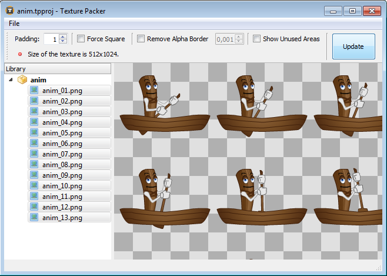

Table of Contents
- EventDispatcher
- Event
- Sprite > EventDispatcher
- Sprite:addChild
- Sprite:addChildAt
- Sprite:removeChild
- Sprite:removeChildAt
- Sprite:contains
- Sprite:globalToLocal
- Sprite:localToGlobal
- Sprite:getChildAt
- Sprite:getChildIndex
- Sprite:getHeight
- Sprite:getWidth
- Sprite:getRotation
- Sprite:setRotation
- Sprite:getScaleX
- Sprite:setScaleX
- Sprite:getScaleY
- Sprite:setScaleY
- Sprite:getScale
- Sprite:setScale
- Sprite:isVisible
- Sprite:setVisible
- Sprite:getX
- Sprite:setX
- Sprite:getY
- Sprite:setY
- Sprite:getPosition
- Sprite:setPosition
- Sprite:set
- Sprite:get
- Sprite:getParent
- Sprite:getNumChildren
- Sprite:getAlpha
- Sprite:setAlpha
- Sprite:setColorTransform
- Sprite:getColorTransform
- Sprite:hitTestPoint
- Sprite:getMatrix
- Sprite:setMatrix
- Sprite:removeFromParent
- Sprite:setBlendMode
- Sprite:clearBlendMode
- Sprite:getBounds
- Stage > Sprite
- TextureBase
- Texture > TextureBase
- TextureRegion
- TexturePack > TextureBase
- Bitmap > Sprite
- FontBase
- Font > FontBase
- TTFont > FontBase
- TextField > Sprite
- Shape > Sprite
- TileMap > Sprite
- MovieClip > Sprite
- Mesh > Sprite
- Mesh.new
- Mesh:setVertex
- Mesh:setIndex
- Mesh:setColor
- Mesh:setTextureCoordinate
- Mesh:setVertices
- Mesh:setIndices
- Mesh:setColors
- Mesh:setTextureCoordinates
- Mesh:setVertexArray
- Mesh:setIndexArray
- Mesh:setColorArray
- Mesh:setTextureCoordinateArray
- Mesh:resizeVertexArray
- Mesh:resizeIndexArray
- Mesh:resizeColorArray
- Mesh:resizeTextureCoordinateArray
- Mesh:clearVertexArray
- Mesh:clearIndexArray
- Mesh:clearColorArray
- Mesh:clearTextureCoordinateArray
- Mesh:setTexture
- Mesh:clearTexture
- Application
- Application:openUrl
- Application:getAccelerometer
- Application:getLogicalWidth
- Application:getLogicalHeight
- Application:getDeviceWidth
- Application:getDeviceHeight
- Application:vibrate
- Application:getLocale
- Application:getLanguage
- Application:setKeepAwake
- Application:getLogicalTranslateX
- Application:getLogicalTranslateY
- Application:getLogicalScaleX
- Application:getLogicalScaleY
- Application:getDeviceInfo
- Application:getContentWidth
- Application:getContentHeight
- Application:setBackgroundColor
- Application:getBackgroundColor
- Application:setOrientation
- Application:getOrientation
- Application:setScaleMode
- Application:getScaleMode
- Application:setLogicalDimensions
- Application:setFps
- Application:getFps
- Application:exit
- Application:getApiVersion
- Application:getTextureMemoryUsage
- Application:getScreenDensity
- os
- Sound
- SoundChannel
- UrlLoader
- Timer
- Matrix
- b2
- b2.World > EventDispatcher
- b2.Body
- b2.Body:getPosition
- b2.Body:setPosition
- b2.Body:setAngle
- b2.Body:getAngle
- b2.Body:getLinearVelocity
- b2.Body:setLinearVelocity
- b2.Body:setAngularVelocity
- b2.Body:getAngularVelocity
- b2.Body:createFixture
- b2.Body:destroyFixture
- b2.Body:applyForce
- b2.Body:applyTorque
- b2.Body:applyLinearImpulse
- b2.Body:applyAngularImpulse
- b2.Body:isAwake
- b2.Body:setAwake
- b2.Body:setActive
- b2.Body:isActive
- b2.Body:getLinearDamping
- b2.Body:setLinearDamping
- b2.Body:getAngularDamping
- b2.Body:setAngularDamping
- b2.Body:getWorldCenter
- b2.Body:getLocalCenter
- b2.Body:getMass
- b2.Body:getInertia
- b2.Body:setGravityScale
- b2.Body:getGravityScale
- b2.Body:getWorldPoint
- b2.Body:getWorldVector
- b2.Body:getLocalPoint
- b2.Body:getLocalVector
- b2.Body:setFixedRotation
- b2.Body:isFixedRotation
- b2.Body:setBullet
- b2.Body:isBullet
- b2.Body:setSleepingAllowed
- b2.Body:isSleepingAllowed
- b2.Fixture
- b2.Shape
- b2.PolygonShape > b2.Shape
- b2.CircleShape > b2.Shape
- b2.EdgeShape > b2.Shape
- b2.ChainShape > b2.Shape
- b2.Joint
- b2.RevoluteJoint > b2.Joint
- b2.RevoluteJoint:getJointAngle
- b2.RevoluteJoint:getJointSpeed
- b2.RevoluteJoint:isLimitEnabled
- b2.RevoluteJoint:enableLimit
- b2.RevoluteJoint:getLimits
- b2.RevoluteJoint:setLimits
- b2.RevoluteJoint:isMotorEnabled
- b2.RevoluteJoint:enableMotor
- b2.RevoluteJoint:setMotorSpeed
- b2.RevoluteJoint:getMotorSpeed
- b2.RevoluteJoint:setMaxMotorTorque
- b2.RevoluteJoint:getMotorTorque
- b2.PrismaticJoint > b2.Joint
- b2.PrismaticJoint:getJointTranslation
- b2.PrismaticJoint:getJointSpeed
- b2.PrismaticJoint:isLimitEnabled
- b2.PrismaticJoint:enableLimit
- b2.PrismaticJoint:getLimits
- b2.PrismaticJoint:setLimits
- b2.PrismaticJoint:isMotorEnabled
- b2.PrismaticJoint:enableMotor
- b2.PrismaticJoint:setMotorSpeed
- b2.PrismaticJoint:getMotorSpeed
- b2.PrismaticJoint:setMaxMotorForce
- b2.RevoluteJoint:getMotorForce
- b2.DistanceJoint > b2.Joint
- b2.PulleyJoint > b2.Joint
- b2.MouseJoint > b2.Joint
- b2.GearJoint > b2.Joint
- b2.WheelJoint > b2.Joint
- b2.WheelJoint:getJointTranslation
- b2.WheelJoint:getJointSpeed
- b2.WheelJoint:isMotorEnabled
- b2.WheelJoint:enableMotor
- b2.WheelJoint:setMotorSpeed
- b2.WheelJoint:getMotorSpeed
- b2.WheelJoint:setMaxMotorTorque
- b2.WheelJoint:getMaxMotorTorque
- b2.WheelJoint:setSpringFrequencyHz
- b2.WheelJoint:getSpringFrequencyHz
- b2.WheelJoint:setSpringDampingRatio
- b2.WheelJoint:getSpringDampingRatio
- b2.WeldJoint > b2.Joint
- b2.FrictionJoint > b2.Joint
- b2.RopeJoint > b2.Joint
- b2.DebugDraw > Sprite
- b2.Contact
- b2.Contact:getManifold
- b2.Contact:getWorldManifold
- b2.Contact:isTouching
- b2.Contact:setEnabled
- b2.Contact:getFixtureA
- b2.Contact:getChildIndexA
- b2.Contact:getFixtureB
- b2.Contact:getChildIndexB
- b2.Contact:setFriction
- b2.Contact:getFriction
- b2.Contact:resetFriction
- b2.Contact:setRestitution
- b2.Contact:getRestitution
- b2.Contact:resetRestitution
- Geolocation > EventDispatcher
- Geolocation.isAvailable
- Geolocation.isHeadingAvailable
- Geolocation.setAccuracy
- Geolocation.getAccuracy
- Geolocation.setThreshold
- Geolocation.getThreshold
- Geolocation:start
- Geolocation:stop
- Geolocation:startUpdatingLocation
- Geolocation:stopUpdatingLocation
- Geolocation:startUpdatingHeading
- Geolocation:stopUpdatingHeading
- Gyroscope
- Accelerometer
- KeyCode
- AlertDialog
- TextInputDialog
- flurry
- sqlite3
- StoreKit > EventDispathcer
- iad
- iad.Banner > EventDispatcher
- Facebook > EventDispatcher
- Facebook:setAppId
- Facebook:authorize
- Facebook:logout
- Facebook:isSessionValid
- Facebook:dialog
- Facebook:graphRequest
- Facebook:setAccessToken
- Facebook:getAccessToken
- Facebook:setExpirationDate
- Facebook:getExpirationDate
- Facebook:extendAccessToken
- Facebook:extendAccessTokenIfNeeded
- Facebook:shouldExtendAccessToken
- GoogleBilling > EventDispatcher
EventDispatcher
All classes that dispatch events inherit from EventDispatcher. The target of
an event is a listener function and an optional data value.
When an event is dispatched, the registered function is called.
If the optional data value is given, it is used as a first parameter
while calling the listener function.
Event dispatching and event targets are the core part of the
Gideros event model. Different event types (such as Event.ENTER_FRAME,
Event.TOUCHES_BEGIN or Event.MOUSE_DOwN)
flow through the scene tree hierarchy differently. When a touch or mouse event occurs,
Gideros dispatches an event object into the event flow from the root of the scene tree.
On the other hand, Event.ENTER_FRAME event is dispatched to all Sprite objects.
If you want to define a class that dispatches events, you can inherit your class
from EventDispatcher.
Example:
-- example 1
ClassA = Core.class(EventDispatcher)
ClassB = Core.class(EventDispatcher)
function ClassA:funcA(event)
print("funcA", self, event:getType(), event:getTarget())
end
local a = ClassA.new()
local b = ClassB.new()
b:addEventListener("myevent", a.funcA, a) -- when b dispatches an "myevent" event,
-- a.funcA will be called with 'a'
-- as first parameter
b:dispatchEvent(Event.new("myevent")) -- will print "funcA"
-- example 2
Ball = Core.class(Sprite)
function Ball:onEnterFrame()
self:setX(self:getX() + 1)
end
ball = Ball.new()
ball:addEventListener(Event.ENTER_FRAME, ball.onEnterFrame, ball)
EventDispatcher:addEventListener(type, listener, data)
Registers a listener function and an optional data value so that the listener function is called when an event of a particular type occurs.
Parameters:
type: (string) The type of event. listener: (function) The listener function that processes the event. data: (optional) An optional data parameter that is passed as a first argument to the listener function.
See Also:
EventDispatcher:removeEventListener
EventDispatcher:removeEventListener(type, listener, data)
Removes a listener from the EventDispatcher object. removeEventListener() function expects
the same arguments with addEventListener() to remove the event. If there is no matching listener
registered, a call to this function has no effect.
Parameters:
type: (string) The type of event. listener: (function) The listener object to remove. data: The data parameter that is used while registering the event.
See Also:
EventDispatcher:addEventListener
EventDispatcher:dispatchEvent(event)
Dispatches an event to this EventDispatcher instance.
Parameters:
event: (Event) The `Event` object to be dispatched.
EventDispatcher:hasEventListener(type)
Checks if the EventDispatcher object has a event listener registered for the specified type of event.
Parameters:
type: (string) The type of event.
Returns:
A value of true if a listener of the specified type is registered; false otherwise.
Event
The objects of Event class contains information about an event that has occurred. Event objects
are passed to event listeners when an event occurs.
Usually event objects contains specific additional information about the event that has occured. For example,
when an Event.MOUSE_DOWN event occurs, x and y fields contain the coordinates:
function onMouseDown(event)
print(event.x, event.y)
end
mysprite:addEventListener(Event.MOUSE_DOWN, onMouseDown)
Users can create their own events and dispatch through the event mechanism:
local event = Event.new("myevent")
event.data1 = "12345"
event.data2 = "abcde"
mydispatcher:dispatchEvent(event)
Event.new(type)
Creates a new Event object to be dispatched from an EventDispatcher.
Parameters:
type: (string)
Returns:
New Event object.
Event:getType()
Returns a string that represents the type of the event.
Returns:
Type of event.
Event:getTarget()
Returns the element on which the event listener was registered.
Returns:
Target of event.
Event:stopPropagation()
Disables the propagation of the current event in the scene tree hierarchy.
Sprite > EventDispatcher
The Sprite class is the base class for all objects that can
be placed on the scene tree. It is the basic scene tree building block.
A sprite can contain child sprites which makes the scene tree hierarchy. Transformations such as translation, rotation, scaling and color transforms propogates its effect to all of its children.
The drawing order is defined by the order of children. First child is drawn first and last child is drawn last. It is possible to change the drawing order by modifying the order of child list.
A Sprite instance can exists without attaching the scene tree.
An unattached sprite can receive Event.ENTER_FRAME event but
it will only receive mouse and touch events when it is
attached to the scene tree.
Sprite Events
- Event.ENTER_FRAME = “enterFrame”
- Event.ADDED_TO_STAGE = “addedToStage”
- Event.REMOVED_FROM_STAGE = “removedFromStage”
- Event.MOUSE_DOWN = “mouseDown”
- Event.MOUSE_MOVE = “mouseMove”
- Event.MOUSE_UP = “mouseUp”
- Event.TOUCHES_BEGIN = “touchesBegin”
- Event.TOUCHES_MOVE = “touchesMove”
- Event.TOUCHES_END = “touchesEnd”
- Event.TOUCHES_CANCEL = “touchesCancel”
Sprite:addChild(child)
Adds a sprite as a child to this sprite. The child is
added as a last child of this Sprite instance.
Sprites can have only one parent. Therefore if you add a child object that already has a different sprite as a parent, the sprite is removed from the child list of the other sprite and then added to this sprite.
Parameters:
child: (Sprite) The child sprite to add.
See Also:
Sprite:addChildAt(child, index)
Adds a sprite as a child to this sprite. The child is added at the index position specified. Indices start from 1.
Sprites can have only one parent. Therefore if you add a child object that already has a different sprite as a parent, the sprite is removed from the child list of the other sprite and then added to this sprite.
Parameters:
child: (Sprite) The child sprite to add. index: (number) The index position to which the child is added.
See Also:
Sprite:removeChild(child)
Removes the specified child Sprite instance from the child list of this Sprite instance.
Parameters:
child: (Sprite) The child sprite to remove.
See Also:
Sprite:removeChildAt(index)
Removes the child Sprite instance at the specifed index. Index of the first child is 1
and index of the last child can be get from Sprite:getNumChildren function.
Parameters:
index: (number) The child index of the sprite to remove.
Sprite:contains(child)
Determines whether the specified sprite is contained in the subtree of
this Sprite instance.
Parameters:
child: (Sprite) The child object to test.
Returns:
true if the child object is contained in the subtree of this Sprite instance, otherwise false.
Sprite:globalToLocal(x, y)
Converts the x,y coordinates from the global to the sprite’s (local) coordinates.
Parameters:
x: (number) x coordinate of the global coordinate. y: (number) y coordinate of the global coordinate.
Returns:
- x coordinate relative to the display object.
- y coordinate relative to the display object.
See Also:
Sprite:localToGlobal(x, y)
Converts the x,y coordinates from the sprites’s (local) coordinates to the global coordinates.
Parameters:
x: (number) x coordinate of the local coordinate. y: (number) y coordinate of the local coordinate.
Returns:
- x coordinate relative to the display area.
- y coordinate relative to the display area.
See Also:
Sprite:getChildAt(index)
Returns the child Sprite instance that exists at the specified index. First child is at index 1.
Parameters:
index: (number) The index position of the child object.
Returns:
The child sprite at the specified index position.
Sprite:getChildIndex(child)
Returns the index of the specified child sprite.
Parameters:
child: (Sprite) The child sprite to identify.
Returns:
The index of the specified child sprite.
Sprite:getHeight()
Returns the height of the sprite, in pixels. The height is calculated based on the bounds of the content of the sprite.
Returns:
Height of the sprite.
Sprite:getWidth()
Returns the width of the sprite, in pixels. The width is calculated based on the bounds of the content of the sprite.
Returns:
Width of the sprite.
Sprite:getRotation()
Returns the rotation of the sprite in degrees.
Returns:
Rotation of the sprite.
Sprite:setRotation(rotation)
Sets the rotation of the sprite in degrees.
Parameters:
rotation: (number) rotation of the sprite
Sprite:getScaleX()
Returns the horizontal scale of the sprite.
Returns:
The horizontal scale (percentage) of the sprite.
Sprite:setScaleX(scaleX)
Sets the horizontal scale of the sprite.
Parameters:
scaleX: (number) horizontal scale of the sprite
Sprite:getScaleY()
Returns the vertical scale of the sprite.
Returns:
The vertical scale of the object.
Sprite:setScaleY(scaleY)
Sets the vertical scale of the sprite.
Parameters:
scaleY: (number) vertical scale (percentage) of the object
Sprite:getScale()
Returns the horizontal and vertical scales of the sprite.
Returns:
The horizontal and vertical scales of the sprite
Sprite:setScale(scaleX, scaleY)
Sets the horizontal and vertical scales of the sprite.
Parameters:
scaleX: (number) horizontal scale (percentage) of the object scaleY: (number, default = scaleX) vertical scale (percentage) of the object
Sprite:isVisible()
Returns whether or not the sprite is visible. Child sprites that are not visible are also taken into consideration while calculating bounds.
Returns:
A value of true if sprite is visible; false otherwise.
Sprite:setVisible(visible)
Sets whether or not the sprite is visible. Sprites that are not visible are also taken into consideration while calculating bounds.
Parameters:
visible: (bool) whether or not the sprite is visible
Sprite:getX()
Returns the x coordinate of the sprite.
Returns:
The x coordinate of the sprite
Sprite:setX(x)
Sets the x coordinate of the sprite
Parameters:
x: (number) The new x coordinate of the sprite
Sprite:getY()
Returns the y coordinate of the sprite.
Returns:
The y coordinate of the sprite
Sprite:setY(y)
Sets the y coordinate of the sprite.
Parameters:
y: (number) The new y coordinate of the sprite
Sprite:getPosition()
Returns the x and y coordinates of the sprite.
Returns:
The x and y coordinates of the sprite
Sprite:setPosition(x, y)
Sets the x and y coordinates of the sprite.
Parameters:
x: (number) The new x coordinate of the sprite y: (number) The new y coordinate of the sprite
Sprite:set(param, value)
Sets the specified property of this sprite instance by its name. These names are supported:
"x""y""rotation""scaleX""scaleY""scale""alpha""redMultiplier""greenMultiplier""blueMultiplier""alphaMultiplier"
Parameters:
param: (string) The name of the parameter value: (number) The new value of the specified parameter
Example:
-- the following two lines do the same thing
sprite:setX(10)
sprite:set("x", 10)
-- the following two lines do the same thing
sprite:setY(10)
sprite:set("y", 10)
-- the following two lines do the same thing
sprite:setRotation(10)
sprite:set("rotation", 10)
-- the following two lines do the same thing
sprite:setScaleX(0.5)
sprite:set("scaleX", 0.5)
-- the following two lines do the same thing
sprite:setScaleY(0.5)
sprite:set("scaleY", 0.5)
-- the following two lines do the same thing
sprite:setScale(0.5)
sprite:set("scale", 0.5)
Sprite:get(param)
Returns the specified property of this sprite instance by its name. These names are supported:
"x""y""rotation""scaleX""scaleY""alpha""redMultiplier""greenMultiplier""blueMultiplier""alphaMultiplier"
Parameters:
param: (string) The name of the parameter
Returns:
The value of the parameter
Example:
-- the following two lines do the same thing
x = sprite:getX()
x = sprite:get("x")
-- the following two lines do the same thing
y = sprite:getY()
y = sprite:get("y")
-- the following two lines do the same thing
rotation = sprite:getRotation()
rotation = sprite:get("rotation")
-- the following two lines do the same thing
scaleX = sprite:getScaleX()
scaleX = sprite:get("scaleX")
-- the following two lines do the same thing
scaleY = sprite:getScaleY()
scaleY = sprite:get("scaleY")
Sprite:getParent()
Returns the Sprite object that contains this Sprite object.
Returns:
The parent sprite.
Sprite:getNumChildren()
Returns the number of children of this sprite.
Returns:
The number of children of this sprite.
Example:
local container1 = Sprite.new()
local container2 = Sprite.new()
local sprite1 = Sprite.new();
local sprite2 = Sprite.new();
container2:addChild(container1)
container1:addChild(sprite1)
container1:addChild(sprite2)
print(container1:getNumChildren()) --> 2
print(container2:getNumChildren()) --> 1
print(sprite1:getNumChildren()) --> 0
print(sprite2:getNumChildren()) --> 0
Sprite:getAlpha()
Returns the alpha transparency of this sprite. 0 means fully transparent and 1 means fully opaque.
Returns:
The alpha of the sprite
Sprite:setAlpha(alpha)
Sets the alpha transparency of this sprite. 0 means fully transparent and 1 means fully opaque.
Parameters:
alpha: (number) The new alpha transparency of the sprite
Sprite:setColorTransform(redMultiplier, greenMultiplier, blueMultiplier, alphaMultiplier)
Sets the red, green, blue and alpha channel multipliers. This function lets you adjust the color multipliers of a display object. This adjustment also applies to the children of this sprite instance.
Parameters:
redMultiplier: (number, default = 1) The red multiplier of this sprite greenMultiplier: (number, default = 1) The green multiplier of this sprite blueMultiplier: (number, default = 1) The blue multiplier of this sprite alphaMultiplier: (number, default = 1) The alpha multiplier of this sprite
Sprite:getColorTransform()
Returns the red, green, blue and alpha channel multipliers.
Returns:
4 values: redMultiplier, greenMultiplier, blueMultiplier and alphaMultiplier
Sprite:hitTestPoint(x, y)
Checks whether the given coordinates (in global coordinate system) is in bounds of the sprite.
Parameters:
x: (number) y: (number)
Returns:
true if the given global coordinates are in bounds of the sprite, false otherwise.
Sprite:getMatrix()
Returns the transformation matrix of the sprite. Each invocation of this function returns a new Matrix object.
Returns:
The transformation matrix of the sprite
Sprite:setMatrix(matrix)
Sets the transformation matrix of the sprite.
Parameters:
matrix: (Matrix)
Sprite:removeFromParent()
If the sprite has a parent, removes the sprite from the child list of its parent sprite. This function is equilavent to:
function Sprite:removeFromParent()
local parent = self:getParent()
if parent ~= nil then
parent:removeChild(self)
end
end
Sprite:setBlendMode(blendMode)
Sets the blend mode of the sprite. Currently supported blending modes are:
- Sprite.ALPHA = “alpha”
- Sprite.NO_ALPHA = “noAlpha”
- Sprite.ADD = “add”
- Sprite.MULTIPLY = “multiply”
- Sprite.SCREEN = “screen”
If a Sprite object doesn’t set any blending mode, it takes the blending mode from its parent sprite.
Note: The following two lines are completely same: sprite:setBlendMode(“add”) sprite:setBlendMode(Sprite.ADD) It’s a matter of taste which one to choose.
Parameters:
blendMode: (String)
Sprite:clearBlendMode()
Clears the blending mode.
Sprite:getBounds(targetSprite)
Returns a rectangle (as x, y, width and height) that encloses the sprite as it appears in another sprite’s coordinate system.
Parameters:
targetSprite: (Sprite) the sprite that defines the other coordinate system to transform
Returns:
4 values as x, y, width and height of bounds
Example:
local x, y, width, height = sprite:getBounds(sprite) -- returns local (untransformed) bounds
local x, y, width, height = sprite:getBounds(stage) -- returns bounds as transformed to stage's coordinate system
Stage > Sprite
The Stage class represents the top of the scene tree hierarchy. The instances of Stage is not created directly (there is not any Stage.new function) but
there is already a global variable stage.
Stage:setBackgroundColor(r, g, b) (obsolete)
This function is obsolete. Use Application:setBackgroundColor instead.
Sets the background color (or clear color) of the application. Default background color is white (1, 1, 1).
Parameters:
r: (number) red component of background color g: (number) green component of background color b: (number) blue component of background color
Stage:getBackgroundColor() (obsolete)
This function is obsolete. Use Application:getBackgroundColor instead.
Returns the r, g, b values of background color.
Returns:
The r, g, b values of background color.
Stage:setOrientation(orientation) (obsolete)
This function is obsolete. Use Application:setOrientation instead.
- Stage.PORTRAIT = “portrait”
- Stage.PORTRAIT_UPSIDE_DOWN = “portraitUpsideDown”
- Stage.LANDSCAPE_LEFT = “landscapeLeft”
- Stage.LANDSCAPE_RIGHT = “landscapeRight”
Parameters:
orientation: (string)
Example:
stage:setOrientation(Stage.PORTRAIT) -- the buttons are on the bottom
stage:setOrientation(Stage.PORTRAIT_UPSIDE_DOWN) -- the buttons are at the top
stage:setOrientation(Stage.LANDSCAPE_LEFT) -- the buttons are on the right side
stage:setOrientation(Stage.LANDSCAPE_RIGHT) -- the buttons are on the left side
Stage:getOrientation() (obsolete)
This function is obsolete. Use Application:getOrientation instead.
Returns the orientation of the stage.
Returns:
The orientation of the stage
TextureBase
TextureBase is the base class for Texture and TexturePack classes. It provides a common functionaly to texture related classes.
- TextureBase.CLAMP = “clamp”
- TextureBase.REPEAT = “repeat”
TextureBase:getWidth()
Returns the width of the texture in pixels.
Returns:
The width of the texture in pixels.
TextureBase:getHeight()
Returns the height of the texture in pixels.
Returns:
The height of the texture in pixels.
Texture > TextureBase
The Texture class lets you work with textures in an application. The Texture class lets you create
a new Texture object to load from an image file and display in scene tree.
Texture.new(filename, filtering, options)
Creates a new Texture object.
Parameters:
filename: (string) The name of the texture file to be loaded. filtering: (boolean, default = false) Whether or not the texture is filtered. options: (table, optional) A table that specifies optional paramaters. Currently, "transparentColor" and "wrap" fields are supported.
Example:
local texture = Texture.new("image.png", false, {transparentColor = 0xff00ff}) -- do not filter and make the color 0xff00ff transparent
local texture = Texture.new("image.png", true, {wrap = Texture.REPEAT}) -- enable filtering and repeat the texture
TextureRegion
The TextureRegion class specifies a texture and a rectangular region in it. It is used to define independent texture regions
within a texture atlas which is a large image, which contains many smaller sub-images.
Example:
local texture = Texture.new("atlas.png")
-- define 4 equal regions of size 100x100 from "atlas.png"
local region1 = TextureRegion.new(texture, 0, 0, 100, 100)
local region2 = TextureRegion.new(texture, 100, 0, 100, 100)
local region3 = TextureRegion.new(texture, 100, 100, 100, 100)
local region4 = TextureRegion.new(texture, 0, 100, 100, 100)
-- add these regions to scene tree
local bitmap1 = Bitmap.new(region1)
local bitmap2 = Bitmap.new(region2)
local bitmap3 = Bitmap.new(region3)
local bitmap4 = Bitmap.new(region4)
stage:addChild(bitmap1)
stage:addChild(bitmap2)
stage:addChild(bitmap3)
stage:addChild(bitmap4)
TextureRegion.new(texture)
Creates a new TextureRegion object.
Parameters:
texture: (TextureBase) texture object
TextureRegion.new(texture, x, y, width, height)
Creates a new TextureRegion object.
- If TextureRegion object is created with 1 parameter (texture), it specifies the whole texture.
- If TextureRegion object is created with 5 parameters (texture, x, y, width, height), if specifies a rectangular region within texture.
Parameters:
texture: (TextureBase) texture object x: (number) left coordinate of the region y: (number) top coordinate of the region width: (number) width of the region height: (number) height of the region
TextureRegion:setRegion(x, y, width, height)
Sets the coordinates of the region.
Parameters:
x: (number) left coordinate of the region y: (number) top coordinate of the region width: (number) width of the region height: (number) height of the region
TextureRegion:getRegion()
Returns the coordinates of the region.
Returns:
The coordinates of the region as 4 values: x, y, width and height
TexturePack > TextureBase
The TexturePack class specifies a texture pack (or texture atlas). A texture atlas is a large image which contains many smaller sub-images.
Gideros supports dynamic creation of texture atlases and pre-packed texture atlasses by using “Gideros Texture Packer” tool.
Dynamic Creation of Texture Packs
To create a texture pack dynamically (at run-time), create TexturePack object with a table of file names of textures.
local pack = TexturePack.new({"1.png", "2.png", "3.png", "4.png")}
Static Creation of Texture Packs
To create a pre-packed texture atlas, use “Gideros Texture Packer” tool:

This tool exports two files: A .txt file that specifes the positions of texture regions and a .png file of packed texture. Use these two files to create texture pack:
local pack = TexturePack.new("pack.txt", "pack.png")
TexturePack.new(textures, padding, filtering, options)
Creates a new TexturePack object. This function creates the texture pack at runtime.
Parameters:
textures: (table) file names of textures. padding: (number) the spacing between textures in pixels filtering: (boolean, default = false) Whether or not the texture is filtered. options: (table, optional) A table that specifies optional paramaters. Currently "transparentColor" field is supported.
TexturePack.new(txtfile, imagefile, filtering, options)
Creates a new TexturePack object. This function loads the pre-packed texture atlas created by “Gideros Texture Packer” tool.
Parameters:
txtfile: (string) imagefile: (string) filtering: (boolean, default = false) Whether or not the texture is filtered. options: (table, optional) A table that specifies optional paramaters. Currently "transparentColor" field is supported.
TexturePack:getTextureRegion(texturename)
Returns the texture region of texture pack.
Parameters:
texturename: (string)
Returns:
TextureRegion object that specifies the region within the texture pack.
Example:
local pack = TexturePack.new({"gfx/1.png", "gfx/2.png", "gfx/3.png", "gfx/4.png"})
local region1 = pack:getTextureRegion("gfx/1.png")
local region2 = pack:getTextureRegion("gfx/2.png")
local region3 = pack:getTextureRegion("gfx/3.png")
local region4 = pack:getTextureRegion("gfx/4.png")
Bitmap > Sprite
The Bitmap class is used to display texture related objects in the scene tree. It is possible to create Bitmap object from TextureBase or TextureRegion instances.
Bitmap.new(texture)
Creates a new Bitmap object.
Parameters:
texture: (TextureBase or TextureRegion)
Example:
local texture = Texture.new("image.png")
local region = TextureRegion.new(texture, 0, 0, 100, 50)
local bitmap1 = Bitmap.new(texture)
local bitmap2 = Bitmap.new(region)
stage:addChild(bitmap1)
stage:addChild(bitmap2)
Bitmap:setAnchorPoint(x, y)
Sets the anchor point of Bitmap object.
Each Bitmap object has an anchor point that affects the positioning of the texture displayed. By modifying the anchor point, you change the origin of the texture. For example, setting the anchor point to (0.5, 0.5) moves the center of the texture to the origin. If you set the anchor point to (1, 1) instead, the bottom-right corner of the texture will be the origin. The default value of anchor point is (0, 0) which means top-left of the texture is the origin by default.
Parameters:
x: (number) The x coordinate of anchor point. Usually between [0, 1]. y: (number) The y coordinate of anchor point. Usually between [0, 1].
Bitmap:getAnchorPoint()
Returns the x and y coordinates of the anchor point.
Returns:
The x and y coordinates of the anchor point.
Bitmap:setTexture(texture)
Sets the texture.
Parameters:
texture: (TextureBase)
Bitmap:setTextureRegion(textureRegion)
Sets the texture region.
Parameters:
textureRegion: (TextureRegion)
FontBase
FontBase is the base class for Font and TTFont classes.
FontBase:getBounds(text)
Returns the tight bounding rectangle of the characters in the string specified by text.
Parameters:
text: (string)
Returns:
4 values as x, y, width and height of bounds
FontBase:getAdvanceX(text, letterSpacing, size)
Returns the width of the first size characters of text.
Note that this value is not equal to the 3rd return value (width) of getBounds().
getBounds() returns a rectangle describing the bounds this string will cover
whereas getAdvanceX() returns the distance to where the next string should be drawn.
Parameters:
text: (string) letterSpacing: (number, default = 0) size: (number, optional)
Returns:
The width of the first size characters of text.
FontBase:getAscender()
Returns the ascender of the font. The ascender of a font is the distance from the baseline to the highest position characters extend to.
Returns:
The ascender of the font
FontBase:getLineHeight()
Returns the distance from one base line to the next.
Returns:
The distance from one base line to the next.
Font > FontBase
The ‘Font’ class is used to load fonts created by “Gideros Font Creator”.

Gideros Font Creator exports two files: A .txt file that specifes the positions of character glyph a .png file of font.
Use these two files to create Font object as:
local font = Font.new("font.txt", "font.png")
Font.new(txtfile, imagefile, filtering)
Creates a new Font object.
Parameters:
txtfile: (string) imagefile: (string) filtering: (boolean, default = false) Whether or not the font texture is filtered
TTFont > FontBase
The TTFont class is used to load true type fonts.
TTFont.new(filename, size, text, filtering)
Creates a new TTFont object.
Parameters:
filename: (string) The name of the TTF file to be loaded size: (number) size of the font text: (string, optional) if specified, TTFont caches the characters of this test to speed up the rendering filtering: (boolean, default = false) Whether or not the font texture is filtered
TextField > Sprite
The TextField class is used to create display objects for text display.
Example:
local font = Font.new("myfont.txt", "myfont.png")
local textfield = TextField.new(font, "some text")
stage:addChild(textfield)
textfield:setText("some other text") -- change the text
-- to use the default font, pass nil value for the font parameter
local textfield2 = TextField.new(nil, "some other text with default font")
TextField.new(font, text)
Creates a new TextField object with the specified font and text. Gideros runtime includes a
default font. If you specify nil for the font parameter while creating the TextField object, default font is used.
Parameters:
font: (FontBase) The font used for displaying this `TextField` object. If nil, default font is used. text: (string, optional) The text to be displayed.
TextField:setText(text)
Sets the text to be displayed.
Parameters:
text: (string) The text to be displayed.
TextField:getText()
Returns the text displayed.
Returns:
The text displayed.
TextField:setTextColor(color)
Sets the color of the text in a text field in hexadecimal format.
Parameters:
color: (number) color of the text in hexadecimal format.
Example:
textfield:setTextColor(0xff0000) -- red
textfield:setTextColor(0x00ff00) -- green
textfield:setTextColor(0x0000ff) -- blue
TextField:getTextColor()
Returns:
The color of the text in a text field, in hexadecimal format.
TextField:setLetterSpacing(spacing)
Sets the letter-spacing property which is used to increase or decrease the space between characters in a text.
Parameters:
spacing: (number)
TextField:getLetterSpacing()
Returns the letter-spacing property which is used to increase or decrease the space between characters in a text.
Returns:
The letter-spacing property of the text field.
Shape > Sprite
The Shape class is used create and display vector graphics.
Shape.new()
Creates a new Shape object.
Shape:setFillStyle(type, ...)
Sets the fill style that Shape object uses for subsequent drawings. The fill style remains in effect until you call setFillStyle() function with different
parameters.
type parameter can be one of the following values:
- Shape.NONE: Clears the fill style.
- Shape.SOLID: Sets the fill style as a solid color. In this mode, the parameters are color (in hexedecial value) and an optional alpha value.
- Shape.TEXTURE: Sets the fill style as a textured. In this mode, the parameters are texture and an optional transformation matrix.
See the following example for more detailed usage of this function.
Parameters:
type: (string) The type of the fill. Can be one of the Shape.NONE, Shape.SOLID or Shape.TEXTURE. ...: Parameters of the fill style.
Example:
setFillStyle(Shape.NONE) -- clears the fill style
setFillStyle(Shape.SOLID, 0xff0000) -- sets the fill style as solid red color
setFillStyle(Shape.SOLID, 0xff0000, 0.5) -- sets the fill style as solid red color with 0.5 transparency
local texture = Texture.new("image.png")
setFillStyle(Shape.TEXTURE, texture) -- sets the fill style as texture with "image.png"
local matrix = Matrix.new(0.5, 0, 0, 0.5, 0, 0)
setFillStyle(Shape.TEXTURE, texture, matrix) -- sets the fill style as texture with "image.png" with a transformation matrix
Shape:setLineStyle(width, color, alpha)
Sets the line style that Shape object uses for subsequent drawings. The line style remains in effect until you call setLineStyle() function with different
parameters.
Parameters:
width: (number) The width of the line. If this parameter is 0, line is not drawn. color: (number, default = 0x000000) A hexadecimal color value of the line. For example, red is 0xFF0000, blue is 0x0000FF, and so on. alpha: (number, default = 1) The alpha value of the color of the line.
Shape:beginPath(winding)
Resets the current path.
Parameters:
winding: (string, default = Shape.EVEN_ODD) Specifies the winding rule. It can be either Shape.EVEN_ODD or Shape.NON_ZERO.
Shape:moveTo(x, y)
Creates a new subpath with the given point.
Parameters:
x: (number) x coordinate of the point. y: (number) y coordinate of the point.
Shape:lineTo(x, y)
Adds the given point to the current subpath, connected to the previous one by a straight line.
Parameters:
x: (number) x coordinate of the point. y: (number) y coordinate of the point.
Shape:endPath()
Ends the current path and draws the geometry by using the specified line and fill styles.
Shape:closePath()
Marks the current subpath as closed, and starts a new subpath with a point the same as the start and end of the newly closed subpath.
Shape:clear()
Clears the graphics that were drawn to this Shape object, and resets fill and line style settings.
TileMap > Sprite
The TileMap class is used to work with tile maps easily and efficiently.
TileMap.new(width, height, texture, tilewidth, tileheight, spacingx, spacingy, marginx, marginy, displaywidth, displayheight)
Creates a new TileMap instance.
Parameters:
width: (number) The width of the map in tiles height: (number) The height of the map in tiles texture: (TextureBase) The texture used in rendering tile map tilewidth: (number) The width of a tile in pixels tileheight: (number) The height of a tile in pixels spacingx: (number, default = 0) The x-spacing in pixels between the tiles in this tileset spacingy: (number, default = 0) The y-spacing in pixels between the tiles in this tileset marginx: (number, default = 0) The x-margin from the top-left of the texture marginy: (number, default = 0) The y-margin from the top-left of the texture displaywidth: (number, default = tilewidth) The display width of a tile in pixels displayheight: (number, default = tileheight) The display height of a tile in pixels
TileMap:getTile(x, y)
Returns the index of the tile. The tile indices are starting from 1.
Parameters:
x: (number) The x-position of tile y: (number) The y-position of tile
Returns:
If the tile is empty, returns nil, otherwise returns x,y index and flip flag of the tile.
TileMap:setTile(x, y, tx, ty, flip)
Sets the index of the tile. The tile indices are starting from 1.
Parameters:
x: (number) The x-position of tile y: (number) The y-position of tile tx: (number) The x-index of the tile ty: (number) The y-index of the tile flip: (number, default = 0) flip flag of tile. Can be combination of TileMap.FLIP_HORIZONTAL, TileMap.FLIP_VERTICAL and TileMap.FLIP_DIAGONAL
TileMap:clearTile(x, y)
Set an empty tile at given indices. The tile indices are starting from 1.
Parameters:
x: (number) The x-position of tile y: (number) The y-position of tile
TileMap:shift(dx, dy)
Shifts the tile map. The arguments are in tiles, not in pixels. By shifting the tile map one by one as needed, you can create dynamic tile maps.
Parameters:
dx: (number) The x amount of shift in tiles dy: (number) The y amount of shift in tiles
Example:
tilemap:shift(-1, 0) -- shifts the tile map to the left
tilemap:shift(1, 0) -- shifts the tile map to the right
tilemap:shift(0, -1) -- shifts the tile map to the up
tilemap:shift(0, 1) -- shifts the tile map to the down
MovieClip > Sprite
The MovieClip class inherits from the following classes: Sprite > EventDispatcher.
The MovieClip class is used create static timedlined animations. The timeline parameters are given as an array.
Each array element specifies one timeline element and consists of the starting frame, ending frame, sprite and
optional tweening parameters. Frame numbers start from 1.
When a MovieClip object finishes it playing (by reaching its final frame or a frame with stop action),
it dispatches an Event.COMPLETE event.
The following properties can be tweened:
xyrotationscalescaleXscaleYalpha
The following easing functions can be used:
"inBack""outBack""inOutBack""inBounce""outBounce""inOutBounce""inCircular""outCircular""inOutCircular""inCubic""outCubic""inOutCubic""inElastic""outElastic""inOutElastic""inExponential""outExponential""inOutExponential""linear""inQuadratic""outQuadratic""inOutQuadratic""inQuartic""outQuartic""inOutQuartic""inQuintic""outQuintic""inOutQuintic""inSine""outSine""inOutSine"
Following examples demonstrates the possible uses of MovieClip class.
Example:
-- construct a 100 frame animation where x coordinate of sprite tweens from 0 to 200 linearly
local mc = MovieClip.new{
{1, 100, sprite, {x = {0, 200, "linear"}}}
}
-- construct a 100 frame animation where x coordinate of sprite is 50 (constant) and
-- y coordinate of sprite tweens from 50 to 150 by using inBounce function
local mc = MovieClip.new{
{1, 100, sprite, {x = 50, y = {50, 150, "inBounce"}}}
}
-- construct a 200 frame animation where sprite1 and sprite2 tweens differently
-- here sprite1 is visible between frames [1, 150]
-- and sprite2 is visible between frames [100, 200]
local mc = MovieClip.new{
{1, 100, sprite1, {x = {0, 200, "linear"}}},
{50, 150, sprite1, {y = {0, 100, "linear"}}, {alpha = {0, 1, "easeOut"}}},
{100, 200, sprite2, {x = {0, 200, "linear"}}},
}
-- construct a looping 6 frame animation where each frame is a different sprite
local mc = MovieClip.new{
{1, 1, frame1},
{2, 2, frame2},
{3, 3, frame3},
{4, 4, frame4},
{5, 5, frame5},
{6, 6, frame6},
}
mc:setGotoAction(6, 1) -- if the animation reaches frame 6 then go to frame 1
-- construct a looping 6 frame animation playing 5 times slower than the previous example
local mc = MovieClip.new{
{1, 5, frame1},
{5, 10, frame2},
{11, 15, frame3},
{16, 20, frame4},
{21, 25, frame5},
{26, 30, frame6},
}
mc:setGotoAction(30, 1) -- if the animation reaches frame 30 then go to frame 1
MovieClip.new(timeline)
Creates a new MovieClip object. After constructing the MovieClip object, it starts playing. You don’t need to
call MovieClip:play.
Parameters:
timeline: (table) array of timeline elements
MovieClip:play()
Starts playing the movie clip.
MovieClip:stop()
Stops playing the movie clip.
MovieClip:gotoAndPlay(frame)
Goes to the specified frame and starts playing.
Parameters:
frame: (int) the frame number
MovieClip:gotoAndStop(frame)
Goes to the specified frame and stops.
Parameters:
frame: (int) the frame number
MovieClip:setGotoAction(frame, destframe)
Sets a goto action to the specified frame. When the movie clip reaches a frame with goto action, it jumps to the destination frame and continues to play. This function is usually used to create looping animations.
Parameters:
frame: (int) the frame number destframe: (int) the destination frame number
MovieClip:setStopAction(frame)
Sets a stop action to the specified frame. When the movie clip reaches a frame with stop action, it stops playing. This function is usually used to divide the animation into independent parts.
Parameters:
frame: (int) the frame number
MovieClip:clearAction(frame)
Clears the action (goto or stop) at the specified frame.
Parameters:
frame: (int) the frame number
Mesh > Sprite
Mesh class is used to create and display custom constructed set of triangles (triangle meshes). It basically consists of 4 arrays: vertex, index, color (optional), textureCoordinate (optional) and a texture (optional) and it provides more than one way to set/modify these arrays.
Note 1: Mesh class doesn’t do bounds check. If an element at index array points to an non-existent vertex, the application may crash.
Note 2: If color array is set, then setAlpha and setColorTransform functions doesn’t effect the Mesh sprite.
Mesh.new()
Creates a new Mesh object.
Mesh:setVertex(i, x, y)
Sets a vertex at vertex array. Indices are start from 1. If the vertex array is not large enough, it’s expanded automatically.
Parameters:
i: (number) index x: (number) x coordinate y: (number) y coordinate
Example:
-- set the first 3 vertex positions as (100, 100), (150, 100) and (100, 150).
mesh:setVertex(1, 100, 100)
mesh:setVertex(2, 150, 100)
mesh:setVertex(3, 100, 150)
Mesh:setIndex(i, index)
Sets a index at index array. Indices are start from 1. If the index array is not large enough, it’s expanded automatically.
Parameters:
i: (number) index index: (number) index
Example:
-- set the first 3 indices as 10, 11 and 12.
mesh:setIndex(1, 10)
mesh:setIndex(2, 11)
mesh:setIndex(3, 12)
Mesh:setColor(i, color, alpha)
Sets a color at color array. Indices are start from 1. If the color array is not large enough, it’s expanded automatically.
Parameters:
i: (number) index color: (number) color in hexedecial value alpha: (number, default=1.0) alpha value
Example:
-- set the first 3 colors as (0xff0000, 0.5), (0x00ff00, 0.7) and (0x0000ff, 1.0).
mesh:setColor(1, 0xff0000, 0.5) -- red with 0.5 alpha
mesh:setColor(2, 0x00ff00, 0.7) -- green with 0.7 alpha
mesh:setColor(3, 0x0000ff) -- blue with 1.0 alpha
Mesh:setTextureCoordinate(i, u, v)
Sets a texture coordinate at texture coordinate array. Indices are start from 1. If the texture coordinate array is not large enough, it’s expanded automatically.
Parameters:
i: (number) index u: (number) u coordinate v: (number) v coordinate
Example:
-- set the first 3 texture coordinates as (0, 0), (100, 0) and (0, 100).
mesh:setTextureCoordinate(1, 0, 0)
mesh:setTextureCoordinate(2, 100, 0)
mesh:setTextureCoordinate(3, 0, 100)
Mesh:setVertices(vertices)
Sets zero or more vertices at vertex array with a single function call. It accepts multiple values or a Lua array.
Parameters:
vertices:
Example:
-- set 3 vertices with seperate function calls
mesh:setVertex(1, 100, 100)
mesh:setVertex(2, 150, 100)
mesh:setVertex(3, 100, 150)
-- set 3 vertices with one function call
mesh:setVertices(1, 100, 100, 2, 150, 100, 3, 100, 150)
-- same as above
mesh:setVertices{1, 100, 100, 2, 150, 100, 3, 100, 150}
-- these two functions do nothing
mesh:setVertices()
mesh:setVertices{}
Mesh:setIndices(indices)
Sets zero or more indices at index array with a single function call. It accepts multiple values or a Lua array.
Parameters:
indices:
Example:
-- set 3 indices with seperate function calls
mesh:setIndex(1, 10)
mesh:setIndex(2, 11)
mesh:setIndex(3, 12)
-- set 3 indices with one function call
mesh:setIndices(1, 10, 2, 11, 3, 12)
-- same as above
mesh:setIndices{1, 10, 2, 11, 3, 12}
-- these two functions do nothing
mesh:setIndices()
mesh:setIndices{}
Mesh:setColors(colors)
Sets zero or more colors at color array with a single function call. It accepts multiple values or a Lua array.
Parameters:
colors:
Example:
-- set 3 colors with seperate function calls
mesh:setColor(1, 0xff0000, 0.5)
mesh:setColor(2, 0x00ff00, 0.7)
mesh:setColor(3, 0x0000ff)
-- set 3 colors with one function call
mesh:setColors(1, 0xff0000, 0.5, 2, 0x00ff00, 0.7, 3, 0x0000ff, 1.0)
-- same as above
mesh:setColors{1, 0xff0000, 0.5, 2, 0x00ff00, 0.7, 3, 0x0000ff, 1.0}
-- these two functions do nothing
mesh:setColors()
mesh:setColors{}
Mesh:setTextureCoordinates(textureCoordinates)
Parameters:
textureCoordinates:
Example:
-- set 3 texture coordinates with seperate function calls
mesh:setTextureCoordinate(1, 0, 0)
mesh:setTextureCoordinate(2, 100, 0)
mesh:setTextureCoordinate(3, 0, 100)
-- set 3 texture coordinates with one function call
mesh:setTextureCoordinates(1, 0, 0, 2, 100, 0, 3, 0, 100)
-- same as above
mesh:setTextureCoordinates{1, 0, 0, 2, 100, 0, 3, 0, 100}
-- these two functions do nothing
mesh:setTextureCoordinates()
mesh:setTextureCoordinates{}
Mesh:setVertexArray(vertices)
Assigns new content to the vertex array, dropping all the elements contained in the vertex array before the call and replacing them by those specified by the parameters. It accepts multiple values or a Lua array.
Parameters:
vertices:
Example:
-- set the vertex array as (100, 100), (150, 100) and (100, 150)
mesh:setVertexArray(100, 100, 150, 100, 100, 150)
-- same as above
mesh:setVertexArray{100, 100, 150, 100, 100, 150}
Mesh:setIndexArray(indices)
Assigns new content to the index array, dropping all the elements contained in the index array before the call and replacing them by those specified by the parameters. It accepts multiple values or a Lua array.
Parameters:
indices:
Example:
-- set the index array as 10, 11 and 12.
mesh:setIndexArray(10, 11, 12)
-- same as above
mesh:setIndexArray{10, 11, 12}
Mesh:setColorArray(colors)
Assigns new content to the color array, dropping all the elements contained in the color array before the call and replacing them by those specified by the parameters. It accepts multiple values or a Lua array.
Parameters:
colors:
Example:
-- set the color array as (0xff0000, 0.5), (0x00ff00, 0.7) and (0x0000ff, 1.0).
mesh:setColorArray(0xff0000, 0.5, 0x00ff00, 0.7, 0x0000ff, 1.0)
-- same as above
mesh:setColorArray{0xff0000, 0.5, 0x00ff00, 0.7, 0x0000ff, 1.0}
Mesh:setTextureCoordinateArray(textureCoordinates)
Assigns new content to the texture coordinate array, dropping all the elements contained in the texture coordinate array before the call and replacing them by those specified by the parameters. It accepts multiple values or a Lua array.
Parameters:
textureCoordinates:
Example:
-- set the color array as (0, 0), (100, 0) and (0, 100)
mesh:setTextureCoordinateArray(0, 0, 100, 0, 0, 100)
-- same as above
mesh:setTextureCoordinateArray{0, 0, 100, 0, 0, 100}
Mesh:resizeVertexArray(size)
Resizes the vertex array to contain size elements.
If size is smaller than the current vertex array size, the content is reduced to its first size elements, the rest being dropped.
If size is greater than the current vertex array size, the content is expanded by inserting at the end as many copies of 0s as needed to reach a size of size elements.
Parameters:
size: (number) new vertex array size
Mesh:resizeIndexArray(size)
Resizes the index array to contain size elements.
If size is smaller than the current index array size, the content is reduced to its first size elements, the rest being dropped.
If size is greater than the current index array size, the content is expanded by inserting at the end as many copies of 0s as needed to reach a size of size elements.
Parameters:
size: (number) new index array size
Mesh:resizeColorArray(size)
Resizes the color array to contain size elements.
If size is smaller than the current color array size, the content is reduced to its first size elements, the rest being dropped.
If size is greater than the current color array size, the content is expanded by inserting at the end as many copies of 0s as needed to reach a size of size elements.
Parameters:
size: (number) new color array size
Mesh:resizeTextureCoordinateArray(size)
Resizes the texture coordinate array to contain size elements.
If size is smaller than the current texture coordinate array size, the content is reduced to its first size elements, the rest being dropped.
If size is greater than the current texture coordinate array size, the content is expanded by inserting at the end as many copies of 0s as needed to reach a size of size elements.
Parameters:
size: (number) new texture coordinate array size
Mesh:clearVertexArray()
Clears the vertex array.
Mesh:clearIndexArray()
Clears the index array.
Mesh:clearColorArray()
Clears the color array.
Mesh:clearTextureCoordinateArray()
Clears the texture coordinate array.
Mesh:setTexture(texture)
Sets the texture.
Parameters:
texture: (TextureBase)
Mesh:clearTexture()
Clears the texture.
Application
Application class contains the common functions that’s
available to the current application. There is
a global variable application of type Application
to access these functions.
Application:openUrl()
Opens the given URL (Universal Resource Locator) in the appropriate application. URL can be one of the http:, https:, tel:, or mailto: schemes.
The following example opens a web page in the browser: application:openUrl(“http://www.giderosmobile.com”)
If mailto: scheme is specified, the user’s e-mail client will be used to open a composer window containing the options specified in the URL.
For example, the following URL contains a recipient (user@foo.com), a subject (Test), and a message body (Just a test):
application:openUrl(“mailto:user@foo.com?subject=Test&body=Just a test”)
Or to call a number: application:openUrl(“tel:555-123-4567”)
Application:getAccelerometer() (obsolete)
This function is obsolete. Use Accelerometer class instead.
Returns the x, y, z coordinates of the accelerometer.
Returns:
- x coordinate of the accelerometer
- y coordinate of the accelerometer
- z coordinate of the accelerometer
Application:getLogicalWidth()
Returns the logical width of the application that is specified at the project properties.
Returns:
The logical width of the application
Application:getLogicalHeight()
Returns the logical height of the application that is specified at the project properties.
Returns:
The logical height of the application
Application:getDeviceWidth()
Returns the physical width of the device in pixels. For example, for iPhone 3GS this function returns 320 and for iPhone 4 (with retina display enabled) this function returns 640.
Returns:
The physical width of the device in pixels
Application:getDeviceHeight()
Returns the physical height of the device in pixels. For example, for iPhone 3GS this function returns 480 and for iPhone 4 (with retina display enabled) this function returns 960.
Returns:
The physical height of the device in pixels
Application:vibrate()
Vibrates the device. If the device doesn’t support vibration, this function has no effect.
Application:getLocale()
Returns the device locale. The locale string is a combination of ISO 639-1 and ISO 3166-1. For example, en_US, ja_JP.
Returns:
The device locale
Application:getLanguage()
Returns the user language in ISO 639-1 format.
Returns:
The the user language
Application:setKeepAwake(keepAwake)
Controls the screen dimming and device sleeping of the device. When the application has no touches as user input for some period,
the system puts the device into a sleep state where the screen dims. However some applications have no input and controlled
by accelerometer or gyroscope only. For these kind applications, the screen should be kept awake by calling this function
with parameter true.
Note: This function has no effect on desktop.
Parameters:
keepAwake: (boolean) if true, screen is kept awake.
Example:
application:setKeepAwake(true) -- disable screen dimming and device sleeping
application:setKeepAwake(false) -- enable screen dimming and device sleeping
Application:getLogicalTranslateX()
Returns the translation of automatic screen scaling on the x-axis.
Returns:
The translation of automatic screen scaling on the x-axis.
Application:getLogicalTranslateY()
Returns the translation of automatic screen scaling on the y-axis.
Returns:
The translation of automatic screen scaling on the y-axis.
Application:getLogicalScaleX()
Returns the scaling of automatic screen scaling on the x-axis.
Returns:
The scaling of automatic screen scaling on the x-axis.
Application:getLogicalScaleY()
Returns the scaling of automatic screen scaling on the y-axis.
Returns:
The scaling of automatic screen scaling on the y-axis.
Application:getDeviceInfo()
Returns information about device.
- For iOS, returns 5 values: “iOS”, iOS version, device type, user interface idiom and device model
- For Android, returns 2 values: “Android”, Android version
- For Windows returns 1 value: “Windows”
- For Mac OS X returns 1 value: “Mac OS”
Returns:
Information about device
Application:getContentWidth()
If the orientation is portrait, this function returns logical width. If the orientation is landscape, this function returns logical height.
Returns:
Logical width or logical height depending on orientation.
Application:getContentHeight()
If the orientation is portrait, this function returns logical height. If the orientation is landscape, this function returns logical width.
Returns:
Logical width or logical height depending on orientation.
Application:setBackgroundColor(color)
Sets the background color (or clear color) of the application in hexadecimal format. Default background color is white (0xffffff).
Parameters:
color: (number) background color in hexadecimal format
Application:getBackgroundColor()
Returns the background color (or clear color) of the application in hexadecimal format.
Returns:
The background color in hexadecimal format.
Application:setOrientation(orientation)
Sets the orientation of the application. Accepted values are:
- Application.PORTRAIT = “portrait”
- Application.PORTRAIT_UPSIDE_DOWN = “portraitUpsideDown”
- Application.LANDSCAPE_LEFT = “landscapeLeft”
- Application.LANDSCAPE_RIGHT = “landscapeRight”
Parameters:
orientation: (string)
Example:
application:setOrientation(Application.PORTRAIT) -- the buttons are on the bottom
application:setOrientation(Application.PORTRAIT_UPSIDE_DOWN) -- the buttons are at the top
application:setOrientation(Application.LANDSCAPE_LEFT) -- the buttons are on the right side
application:setOrientation(Application.LANDSCAPE_RIGHT) -- the buttons are on the left side
Application:getOrientation()
Returns the orientation of the application.
Returns:
The orientation of the application
Application:setScaleMode(scaleMode)
Sets the automatic scale mode of the application. Accepted values are:
- Application.NO_SCALE = “noScale”
- Application.CENTER = “center”
- Application.PIXEL_PERFECT = “pixelPerfect”
- Application.LETTERBOX = “letterbox”
- Application.CROP = “crop”
- Application.STRETCH = “stretch”
- Application.FIT_WIDTH = “fitWidth”
- Application.FIT_HEIGHT = “fitHeight”
Parameters:
scaleMode: (string)
Application:getScaleMode()
Returns the automatic scale mode of the application.
Returns:
The automatic scale mode of the application
Application:setLogicalDimensions(width, height)
Sets the logical dimensions of the application.
Parameters:
width: (number) logical width height: (number) logical height
Application:setFps(fps)
Sets the frame rate of the application. Accepted values are 30 and 60.
Parameters:
fps: (number) the new frame rate of the application
Application:getFps()
Returns the frame rate of the application.
Returns:
The frame rate of the application.
Application:exit()
Terminates the application. Although this function is available to all platforms, it should be used on Android only.
Application:getApiVersion()
Returns the API version.
Returns:
The API version.
Application:getTextureMemoryUsage()
Returns the texture memory usage (in Kbytes).
Returns:
The texture memory usage (in Kbytes).
Application:getScreenDensity()
Returns the screen density in pixels per inch. If screen density information is not available, returns nil.
Returns:
If available returns the screen density in pixels per inch, otherwise returns ‘nil’.
os
os.timer()
Returns precise time in seconds relative to some arbitrary point.
Returns:
Precise time in seconds relative to some arbitrary point
Sound
The Sound class lets you load and play WAV or MP3 sound files.
Control of the playing sound is performed through the SoundChannel
object.
Example:
local sound = Sound.new("music.mp3")
local channel = sound:play()
-- after some time --
channel:stop()
Sound.new(filename)
Creates a new Sound object.
Parameters:
filename: (string) The name of the sound file to be loaded.
Sound:play(startTime, looping, paused)
Creates a new SoundChannel object to play the sound. By using the retured SoundChannel object,
you can stop the sound and monitor the position.
Parameters:
startTime: (number, default = 0) The initial position in milliseconds at which playback should start. looping: (boolean, default = false) paused: (boolean, default = false)
Returns:
A SoundChannel object, which you use to control the sound. This function returns nil if you run out of available sound channels.
Sound:getLength()
Returns the duration of the sound in miliseconds.
Returns:
The duration of the sound in miliseconds.
SoundChannel
The SoundChannel class is used to control and monitor a playing sound.
SoundChannel Events
- Event.COMPLETE = “complete” When the sound channel has finished playing,
Event.COMPLETEevent is dispatched.
SoundChannel:stop()
Stops the sound playing in the channel.
SoundChannel:setPosition(position)
Sets the current playback position in miliseconds.
Parameters:
position: (number) position of the channel to set in miliseconds
SoundChannel:getPosition()
If the sound is playing, getPosition returns the position of the current playback, measured in miliseconds from the start of the sound.
If the sound is not playing (paused or stopped), getPosition returns the last point that was played.
Returns:
The position of the sound in miliseconds.
SoundChannel:setVolume(volume)
Sets the volume of the sound channel.
Parameters:
volume: (number) The new volume of the sound channel. Valid range of this parameter is between 0.0 and 1.0, where 1.0 is the maximum volume value.
SoundChannel:getVolume()
Returns the current volume of the sound channel.
Returns:
The current volume of the sound channel.
SoundChannel:setPitch(pitch)
Sets the pitch of the sound channel. You cannot set the pitch of a background music.
Parameters:
pitch: (number) The new pitch of the sound channel.
SoundChannel:getPitch()
Returns the current pitch of the sound channel.
Returns:
The current pitch of the sound channel.
SoundChannel:setPaused(paused)
Sets the paused state of the channel.
Parameters:
paused: (boolean) paused state to set
SoundChannel:isPaused()
Returns the paused state of the channel.
Returns:
true if the channel is paused, false otherwise.
SoundChannel:setLooping(looping)
Sets the looping state of the channel.
Parameters:
looping: (boolean) looping state to set
SoundChannel:isLooping()
Returns the looping state of the channel.
Returns:
true if the channel is looping, false otherwise.
SoundChannel:isPlaying()
Returns the playing state for the sound channel.
Returns:
true if the channel is currently playing a sound, false otherwise.
UrlLoader
The UrlLoader class is used to download data from an URL. It can be used
to download (and optionally save) text files, XML files, JSON files, image files or binary files, etc.
Downloaded data is delivered at event.data field of Event.COMPLETE event as string. Lua is eight-bit clean and so strings
may contain characters with any numeric value, including embedded zeros. That means that you can store
any binary data into a string.
UrlLoader Events
The UrlLoader class dispatches the events Event.COMPLETE, Event.PROGRESS and Event.ERROR.
Event.COMPLETE
This event is dispatched when loading is complete.
- event.data: The downloaded data.
Event.PROGRESS
This event is dispatched as the notification of how far the download has progressed.
- event.bytesLoaded: The number of bytes loaded.
- event.bytesTotal: The total number of bytes that will be loaded or -1 if the length can’t be determined.
Event.ERROR
This event is dispatched when UrlLoader fails and terminates the download.
HTTP Request Methods
UrlLoader supports GET, POST, PUT and DELETE methods. These are defined by these string constants:
- UrlLoader.GET = “get”
- UrlLoader.POST = “post”
- UrlLoader.PUT = “put”
- UrlLoader.DELETE = “delete”
Example:
The example below shows downloading an image file from an URL, saving it to the documents folder and displaying it on the stage. This example also shows downloading progress and handling errors.
local loader = UrlLoader.new("http://example.com/image.png")
local function onComplete(event)
local out = io.open("|D|image.png", "wb")
out:write(event.data)
out:close()
local b = Bitmap.new(Texture.new("|D|image.png"))
stage:addChild(b)
end
local function onError()
print("error")
end
local function onProgress(event)
print("progress: " .. event.bytesLoaded .. " of " .. event.bytesTotal)
end
loader:addEventListener(Event.COMPLETE, onComplete)
loader:addEventListener(Event.ERROR, onError)
loader:addEventListener(Event.PROGRESS, onProgress)
UrlLoader.new(url, method, headers, body)
Creates a new UrlLoader object.
url parameter specifies the URL to download. This parameter is optional and if specified loading starts immediately.
method parameter specifies the HTTP request method. It can be one of the values of UrlLoader.GET, UrlLoader.POST, UrlLoader.PUT or UrlLoader.DELETE.
The default HTTP method is UrlLoader.GET.
body parameter specifies the HTTP body data. This parameter is used only when the HTTP method is UrlLoader.POST or or UrlLoader.PUT.
After loading is finished, loaded data is stored at event.data field of Event.COMPLETE event as string.
Parameters:
url: (string, optional) URL to download. This parameter is optional and if specified loading starts immediately. method: (string, default = "get") HTTP request method. headers: (table, optional) HTTP headers. body: (string, optional) HTTP body data. This data is sent as the message body of a request.
Example:
local url = "http://www.[yourDomain].com/application.php?userid=gideros&login=guest"
local loader1 = UrlLoader.new(url)
local loader2 = UrlLoader.new(url, UrlLoader.GET) -- same as the previous line
local loader3 = UrlLoader.new(url, UrlLoader.POST, "my post data")
local loader4 = UrlLoader.new(url, UrlLoader.PUT, "my put data")
local loader5 = UrlLoader.new(url, UrlLoader.DELETE)
local headers = {
["Content-Type"] = "application/x-www-form-urlencoded",
["User-Agent"] = "Gideros Browser",
}
local loader6 = UrlLoader.new(url, UrlLoader.PUT, headers, "key=value")
UrlLoader:load(url, method, headers, body)
Loads data from the specified URL. If there is any load operation in progress, it is terminated and new progress starts.
Please refer to UrlLoader.new for more detailed description of url, method and body parameters.
Parameters:
url: (string, optional) URL to download. This parameter is optional and if specified loading starts immediately. method: (string, default = "get") HTTP request method. headers: (table, optional) HTTP headers. body: (string, optional) HTTP body data. This data is sent as the message body of a request.
UrlLoader:close()
Terminates the current loading operation.
Timer
The Timer class is used to execute a code at specified intervals. The listener functions are registered
through Event.TIMER and Event.TIMER_COMPLETE events.
Timer Events
- Event.TIMER = “timer”
- Event.TIMER_COMPLETE = “timerComplete”
Timer.new(delay, repeatCount)
Creates a new Timer object with the specified delay and repeatCount states.
Parameters:
delay: The time interval between timer events in milliseconds. repeatCount: (default = 0) The number of repetitions. A value of 0 runs the timer infinitely. If nonzero, the timer runs the specified number of times and then stops.
Timer:start()
Starts the timer.
Timer:stop()
Stops the timer. This function doesn’t change the currentCount property.
Timer:reset()
Stops the timer and sets the currentCount property to 0.
Timer:getDelay()
Returns the time interval between timer events in milliseconds.
Returns:
The time interval between timer events in milliseconds.
Timer:getCurrentCount()
Returns the current trigger count of the timer. It starts with 0 and if it reaches repeatCount value, timer stops.
Returns:
The current trigger count.
Timer:getRepeatCount()
Returns the number of repetitions the timer will make. A value of 0 means the timer runs infinitely. If nonzero, the timer runs the specified number of times and then stops.
Returns:
The number of repetitions.
Timer:isRunning()
Returns the current running status of timer.
Returns:
true if the timer is running, false otherwise.
Timer:setDelay(delay)
Sets the time interval between timer events in milliseconds.
Parameters:
delay: (number) The time interval between timer events in milliseconds.
Timer:setRepeatCount(repeatCount)
Sets the number of repetitions the timer will make. A value of 0 means the timer runs infinitely. If nonzero, the timer runs the specified number of times and then stops.
Parameters:
repeatCount: (number) the number of repetitions the timer will make
Timer.delayedCall(delay, func, data)
Provides a simple way to call a function after a set amount of time. This function returns the
Timer object created inside.
Parameters:
delay: (number) Delay in miliseconds before the function is called func: (function) Function to call data: (optional) An optional data parameter that is passed as a first argument to the function
Returns:
The Timer object
Timer.pauseAllTimers() (obsolete)
This function is obsolete. Use Timer.pauseAll instead.
Pause all timers. Suitable for temporarily pausing all timers when application is paused.
Timer.resumeAllTimers() (obsolete)
This function is obsolete. Use Timer.resumeAll instead.
Resume all timers.
Timer.pauseAll()
Pause all timers. Suitable for temporarily pausing all timers when application is paused.
Timer.resumeAll()
Resume all timers.
Timer.stopAll()
Stop all timers.
Matrix
The Matrix class specifies 2D transformation from one coordinate space to another. These transformations include translation, rotation, scaling and skewing.
A 2D transformation matrix is a 3 x 3 matrix in homogenous coordinate system:

You can get and set the values of all six of the properties in a
Matrix object: m11, m12, m21, m22, tx, and ty.
Matrix.new(m11, m12, m21, m22, tx, ty)
Creates a new Matrix object with the specified parameters.
Parameters:
m11: (number, default = 1) m12: (number, default = 0) m21: (number, default = 0) m22: (number, default = 1) tx: (number, default = 0) ty: (number, default = 0)
Returns:
New Matrix object.
Matrix:getM11()
Returns the value of the m11 component for this Matrix instance.
Returns:
The current m11 parameter.
Matrix:getM12()
Returns the value of the m12 component for this Matrix instance.
Returns:
The current m12 parameter.
Matrix:getM21()
Returns the value of the m21 component for this Matrix instance.
Returns:
The current m21 parameter.
Matrix:getM22()
Returns the value of the m22 component for this Matrix instance.
Returns:
The current m22 parameter.
Matrix:getTx()
Returns the value of the tx component for this Matrix instance.
Returns:
The current tx parameter.
Matrix:getTy()
Returns the value of the ty component for this Matrix instance.
Returns:
The current ty parameter.
Matrix:setM11(m11)
Sets the value of the m11 component for this Matrix instance.
Parameters:
m11: (number)
Matrix:setM12(m12)
Sets the value of the m12 component for this Matrix instance.
Parameters:
m12: (number)
Matrix:setM21(m21)
Sets the value of the m21 component for this Matrix instance.
Parameters:
m21: (number)
Matrix:setM22(m22)
Sets the value of the m22 component for this Matrix instance.
Parameters:
m22: (number)
Matrix:setTx(tx)
Sets the value of the tx component for this Matrix instance.
Parameters:
tx: (number)
Matrix:setTy(ty)
Sets the value of the ty component for this Matrix instance.
Parameters:
ty: (number)
Matrix:getElements()
Returns the elements of the matrix.
Returns:
m11, m12, m21, m22, tx, ty
Matrix:setElements(m11, m12, m21, m22, tx, ty)
Sets all 6 elements of the matrix.
Parameters:
m11: (number, default = 1) m12: (number, default = 0) m21: (number, default = 0) m22: (number, default = 1) tx: (number, default = 0) ty: (number, default = 0)
b2
To load the Box2D library, call require "box2d". After loading Box2D library, b2 table stores all
classes and functions related to Box2D physics library.
b2.setScale(scale)
Box2D is tuned for MKS (meters-kilogram-second) units and the size of moving objects should roughly between 0.1 and 10 meters. If you directly use the pixels as your units, unfortunately this will lead to a poor simulation and possibly weird behavior.
Gideros uses an internal scale system to convert between meters and pixels. By default, the value of this scale is 30
which means 1 meter = 30 pixels. This is a global value and effects all the physics system. Therefore, it is recommended to set this
value once before any physical objects are instantiated (e.g. right after calling require "box2d")
Parameters:
scale: (number) - the global pixels to meters scale
See Also:
b2.getScale()
Returns the global pixels to meters scale (Please refer to b2.setScale function for more information about pixels to meters scaling).
Returns:
The global pixels to meters scale
See Also:
b2.createRevoluteJointDef(bodyA, bodyB, anchorx, anchory)
Creates and returns a revolute joint definition table with the bodies, local anchors, and reference angle using a world anchor point. (Please refer to b2.World:createJoint function for more information about all the information needed to create a revolute joint).
Parameters:
bodyA: (b2.Body) the first attached body bodyB: (b2.Body) the second attached body anchorx: (number) the x coordinate of the world anchor point anchory: (number) the y coordinate of the world anchor point
Returns:
A new revolute joint definition table
See Also:
b2.World:createJoint
b2.RevoluteJoint
Example:
local jointdef = b2.createRevoluteJointDef(bodyA, bodyB, anchorx, anchory)
local joint = b2.World:createJoint(jointdef)
b2.createPrismaticJointDef(bodyA, bodyB, anchorx, anchory, axisx, axisy)
Creates and returns a prismatic joint definition table with the bodies, anchors, axis, and reference angle using the world anchor and world axis. (Please refer to b2.World:createJoint function for more information about all the information needed to create a prismatic joint).
Parameters:
bodyA: (b2.Body) the first attached body bodyB: (b2.Body) the second attached body anchorx: (number) the x coordinate of the world anchor point anchory: (number) the y coordinate of the world anchor point axisx: (number) the x coordinate of the world axis axisy: (number) the y coordinate of the world axis
Returns:
A new prismatic joint definition table
See Also:
b2.World:createJoint
b2.PrismaticJoint
b2.createDistanceJointDef(bodyA, bodyB, anchorAx, anchorAy, anchorBx, anchorBy)
Creates and returns a distance joint definition table with the bodies, anchors, and length using the world anchors. (Please refer to b2.World:createJoint function for more information about all the information needed to create a distance joint).
Parameters:
bodyA: (b2.Body) the first attached body bodyB: (b2.Body) the second attached body anchorAx: (number) the x coordinate of the world anchor point of bodyA anchorAy: (number) the y coordinate of the world anchor point of bodyA anchorBx: (number) the x coordinate of the world anchor point of bodyB anchorBy: (number) the y coordinate of the world anchor point of bodyB
Returns:
A new distance joint definition table
See Also:
b2.World:createJoint
b2.DistanceJoint
b2.createPulleyJointDef(bodyA, bodyB, groundAnchorAx, groundAnchorAy, groundAnchorBx, groundAnchorBy, anchorAx, anchorAy, anchorBx, anchorBy, ratio)
Creates and returns a pulley joint definition table with the bodies, anchors, lengths, max lengths, and ratio using the world anchors. (Please refer to b2.World:createJoint function for more information about all the information needed to create a pulley joint).
Parameters:
bodyA: (b2.Body) the first attached body bodyB: (b2.Body) the second attached body groundAnchorAx: (number) the x coordinate of the first ground anchor in world coordinates. This point never moves. groundAnchorAy: (number) the y coordinate of the first ground anchor in world coordinates. This point never moves. groundAnchorBx: (number) the x coordinate of the second ground anchor in world coordinates. This point never moves. groundAnchorBy: (number) the y coordinate of the second ground anchor in world coordinates. This point never moves. anchorAx: (number) the x coordinate of the world anchor point of bodyA anchorAy: (number) the y coordinate of the world anchor point of bodyA anchorBx: (number) the x coordinate of the world anchor point of bodyB anchorBy: (number) the y coordinate of the world anchor point of bodyB ratio: (number) the pulley ratio, used to simulate a block-and-tackle
Returns:
A new pulley joint definition table
See Also:
b2.World:createJoint
b2.PulleyJoint
b2.createMouseJointDef(bodyA, bodyB, targetx, targety, maxForce, frequencyHz, dampingRatio)
Creates and returns a mouse joint definition table with the bodies, world target point, maxForce and optional frequencyHz and dampingRatio. (Please refer to b2.World:createJoint function for more information about all the information needed to create a mouse joint).
Parameters:
bodyA: (b2.Body) the first attached body bodyB: (b2.Body) the second attached body targetx: (number) the x coordinate of the world target point targety: (number) the y coordinate of the world target point maxForce: (number) the maximum constraint force that can be exerted to move the candidate body frequencyHz: (number, default = 5) the response speed dampingRatio: (number, default = 0.7) the damping ratio. 0 = no damping, 1 = critical damping
Returns:
A new mouse joint definition table
See Also:
b2.World:createJoint
b2.MouseJoint
b2.createGearJointDef(bodyA, bodyB, joint1, joint2, ratio)
Creates and returns a gear joint definition table. (Please refer to b2.World:createJoint function for more information about all the information needed to create a gear joint).
Parameters:
bodyA: (b2.Body) the first attached body bodyB: (b2.Body) the second attached body joint1: (b2.Joint) the first revolute/prismatic joint attached to the gear joint joint2: (b2.Joint) the second revolute/prismatic joint attached to the gear joint ratio: (number, default = 1) the gear ratio
Returns:
A new gear joint definition table
See Also:
b2.World:createJoint
b2.GearJoint
b2.createWheelJointDef(bodyA, bodyB, anchorx, anchory, axisx, axisy)
Creates and returns a wheel joint definition table. (Please refer to b2.World:createJoint function for more information about all the information needed to create a wheel joint).
Parameters:
bodyA: (b2.Body) the first attached body bodyB: (b2.Body) the second attached body anchorx: (number) the x coordinate of the world anchor point anchory: (number) the y coordinate of the world anchor point axisx: (number) the x coordinate of the world translation axis in bodyA axisy: (number) the y coordinate of the world translation axis in bodyA
Returns:
A new wheel joint definition table
See Also:
b2.World:createJoint
b2.WheelJoint
b2.createWeldJointDef(bodyA, bodyB, anchorAx, anchorAy, anchorBx, anchorBy)
Creates and returns a weld joint definition table with the bodies, anchors, and reference angle using a world anchor point. (Please refer to b2.World:createJoint function for more information about all the information needed to create a weld joint).
Parameters:
bodyA: (b2.Body) the first attached body bodyB: (b2.Body) the second attached body anchorAx: (number) the x coordinate of the world anchor point of bodyA anchorAy: (number) the y coordinate of the world anchor point of bodyA anchorBx: (number) the x coordinate of the world anchor point of bodyB anchorBy: (number) the y coordinate of the world anchor point of bodyB
Returns:
A new weld joint definition table
See Also:
b2.World:createJoint
b2.WeldJoint
b2.createFrictionJointDef(bodyA, bodyB, anchorx, anchory)
Creates and returns a friction joint definition table with the bodies and local anchors using a world anchor point. (Please refer to b2.World:createJoint function for more information about all the information needed to create a friction joint).
Parameters:
bodyA: (b2.Body) the first attached body bodyB: (b2.Body) the second attached body anchorx: (number) the x coordinate of the world anchor point anchory: (number) the y coordinate of the world anchor point
Returns:
A new friction joint definition table
See Also:
b2.World:createJoint
b2.FrictionJoint
b2.createRopeJointDef(bodyA, bodyB, anchorAx, anchorAy, anchorBx, anchorBy, maxLength)
Creates and returns a rope joint definition table with the bodies and local anchors using a world anchor point. (Please refer to b2.World:createJoint function for more information about all the information needed to create a rope joint).
Parameters:
bodyA: (b2.Body) the first attached body bodyB: (b2.Body) the second attached body anchorAx: (number) the x coordinate of the world anchor point of bodyA anchorAy: (number) the y coordinate of the world anchor point of bodyA anchorBx: (number) the x coordinate of the world anchor point of bodyB anchorBy: (number) the y coordinate of the world anchor point of bodyB maxLength: (number) the maximum length of the rope
Returns:
A new rope joint definition table
See Also:
b2.World:createJoint
b2.RopeJoint
b2.World > EventDispatcher
The b2.World class inherits from the following class: EventDispatcher.
The b2.World class manages all physics entities and dynamic simulation. It is possible to create and manage more than one b2.World instance.
b2.World.new(gravityx, gravityy, doSleep)
Creates a new b2.World object. You can create more then one b2.World object to manage independent worlds.
Parameters:
gravityx: (number) the x component the gravity gravityy: (number) the y component the gravity doSleep: (boolean, default = true) improve performance by not simulating inactive bodies
Returns:
A new b2.World object.
b2.World:createBody(bodyDef)
Creates a rigid body given a definition. The body definition is given as an ordinary table. The fields of the body definition table are:
- type: (number) The body type:
b2.STATIC_BODY,b2.KINEMATIC_BODY, orb2.DYNAMIC_BODY. Note: if a dynamic body would have zero mass, the mass is set to one. - position: (table) The world position of the body (see the example below to understand how this table is set). Avoid creating bodies at the origin since this can lead to many overlapping shapes.
- angle: (number) The world angle of the body in radians.
- linearVelocity: (table) The linear velocity of the body’s origin in world co-ordinates (see the example below to understand how this table is set).
- angularVelocity: (number) The angular velocity of the body.
- linearDamping: (number) Linear damping is use to reduce the linear velocity. The damping parameter can be larger than 1.0 but the damping effect becomes sensitive to the time step when the damping parameter is large.
- angularDamping: (number) Angular damping is use to reduce the angular velocity. The damping parameter can be larger than 1.0 but the damping effect becomes sensitive to the time step when the damping parameter is large.
- allowSleep: (boolean) Set this flag to false if this body should never fall asleep. Note that this increases CPU usage.
- awake: (boolean) Is this body initially awake or sleeping?
- fixedRotation: (boolean) Should this body be prevented from rotating? Useful for characters.
- bullet: (boolean) Is this a fast moving body that should be prevented from tunneling through other moving bodies? Note that all bodies are prevented from tunneling through kinematic and static bodies. This setting is only considered on dynamic bodies. Warning: You should use this flag sparingly since it increases processing time.
- active: (boolean) Does this body start out active?
- gravityScale: (number) Scale the gravity applied to this body.
The unset fields gets default values.
Warning: This function is locked during callbacks.
Parameters:
bodyDef: (table)
Returns:
The created b2.Body instance.
Example:
local body = world:createBody{
type = b2.STATIC_BODY,
position = {x=0, y=0.5},
angle = math.pi/4,
linearVelocity = {x=0.1, y=0.2},
}
b2.World:destroyBody(body)
Destroys a rigid body. This function is locked during callbacks.
Warning:
- This automatically deletes all associated shapes and joints.
- This function is locked during callbacks.
Parameters:
body: (b2.Body) body to be destroyed
b2.World:step(timeStep, velocityIterations, positionIterations)
Take a time step. This performs collision detection, integration, and constraint solution.
Parameters:
timeStep: (number) the amount of time to simulate, this should not vary velocityIterations: (number) for the velocity constraint solver positionIterations: (number) for the position constraint solver
b2.World:clearForces()
Call this after you are done with time steps to clear the forces. You normally call this after each call to b2.World:step,
unless you are performing sub-steps. By default, forces will be automatically cleared, so you don’t need to call this function.
b2.World:setGravity(gravityx, gravityy)
Sets the gravity vector.
Parameters:
gravityx: (number) the x component the gravity gravityy: (number) the y component the gravity
b2.World:getGravity()
Returns the gravity vector.
Returns:
x and y component of gravity vector.
b2.World:queryAABB(lowerx, lowery, upperx, uppery)
Query the world for all fixtures that potentially overlap the provided AABB.
Parameters:
lowerx: (number) the lower x coordinate of the query box lowery: (number) the lower y coordinate of the query box upperx: (number) the upper x coordinate of the query box uppery: (number) the upper y coordinate of the query box
Returns:
Array of fixtures that potentially overlaps the provided AABB
b2.World:rayCast(x1, y1, x2, y2, listener, data)
Ray-cast the world for all fixtures in the path of the ray. Your callback controls whether you get the closest point, any point, or n-points. The ray-cast ignores shapes that contain the starting point.
Listener function is called for each fixture found in the query and accepts 6 parameters (7 if data parameter is provided):
- the fixture hit by the ray
- the x coordinate of the point of initial intersection
- the y coordinate of the point of initial intersection
- the x coordinate of the normal vector at the point of intersection
- the y coordinate of the normal vector at the point of intersection
- fraction
You control how the ray cast proceeds by returning a number:
- return no value or -1: ignore this fixture and continue
- return 0: terminate the ray cast
- return fraction: clip the ray to this point
- return 1: don’t clip the ray and continue
Parameters:
x1: (number) the x coordinate of the ray starting point y1: (number) the y coordinate of the ray starting point x2: (number) the x coordinate of the ray ending point y2: (number) the y coordinate of the ray ending point listener: (function) the listener function that processes the results data: (optional) an optional data parameter that is passed as a first argument to the listener function
b2.World:createJoint(jointDef)
Creates a joint given a definition. All 10 types of joints is created by using this function:
Revolute Joint
Revolute joint definition. This requires defining an anchor point where the bodies are joined. The definition uses local anchor points so that the initial configuration can violate the constraint slightly. You also need to specify the initial relative angle for joint limits. This helps when saving and loading a game. The local anchor points are measured from the body’s origin rather than the center of mass because:
- you might not know where the center of mass will be.
- if you add/remove shapes from a body
and recompute the mass, the joints will be broken.
- type: (number) b2.REVOLUTE_JOINT
- bodyA: (b2.Body) The first attached body.
- bodyB: (b2.Body) The second attached body.
- collideConnected: (boolean) Set this flag to true if the attached bodies should collide.
- localAnchorA: (table) The local anchor point relative to bodyA’s origin.
- localAnchorB: (table) The local anchor point relative to bodyB’s origin.
- referenceAngle: (number) The bodyB angle minus bodyA angle in the reference state (radians).
- enableLimit: (boolean) A flag to enable joint limits.
- lowerAngle: (number) The lower angle for the joint limit (radians).
- upperAngle: (number) The upper angle for the joint limit (radians).
- enableMotor: (boolean) A flag to enable the joint motor.
- motorSpeed: (number) The desired motor speed. Usually in radians per second.
- maxMotorTorque: (number) The maximum motor torque used to achieve the desired motor speed. Usually in N-m.
Also, you can use b2.createRevoluteJointDef function to create a revolute joint definiton table easier.
Prismatic Joint
Prismatic joint definition. This requires defining a line of motion using an axis and an anchor point. The definition uses local anchor points and a local axis so that the initial configuration can violate the constraint slightly. The joint translation is zero when the local anchor points coincide in world space. Using local anchors and a local axis helps when saving and loading a game.
- type: (number) b2.PRISMATIC_JOINT
- bodyA: (b2.Body) The first attached body.
- bodyB: (b2.Body) The second attached body.
- collideConnected: (boolean) Set this flag to true if the attached bodies should collide.
- localAnchorA: (table) The local anchor point relative to bodyA’s origin.
- localAnchorB: (table) The local anchor point relative to bodyB’s origin.
- localAxisA: (table) The local translation axis in bodyA.
- referenceAngle: (number) The body2 angle minus body1 angle in the reference state (radians).
- enableLimit: (boolean) A flag to enable joint limits.
- lowerTranslation: (number) The lower translation limit, usually in meters.
- upperTranslation: (number) The upper translation limit, usually in meters.
- enableMotor: (boolean) A flag to enable the joint motor.
- maxMotorForce: (number) The maximum motor torque, usually in N-m.
- motorSpeed: (number) The desired motor speed in radians per second.
Also, you can use b2.createPrismaticJointDef function to create a prismatic joint definiton table easier.
Distance Joint
Distance joint definition. This requires defining an anchor point on both bodies and the non-zero length of the distance joint. The definition uses local anchor points so that the initial configuration can violate the constraint slightly. This helps when saving and loading a game.
- type: (number) b2.DISTANCE_JOINT
- bodyA: (b2.Body) The first attached body.
- bodyB: (b2.Body) The second attached body.
- collideConnected: (boolean) Set this flag to true if the attached bodies should collide.
- localAnchorA: (table) The local anchor point relative to bodyA’s origin.
- localAnchorB: (table) The local anchor point relative to bodyB’s origin.
- length: (number) The natural length between the anchor points. Do not use a zero or short length.
- frequencyHz: (number) The mass-spring-damper frequency in Hertz.
- dampingRatio: (number) The damping ratio. 0 = no damping, 1 = critical damping.
Also, you can use b2.createDistanceJointDef function to create a distance joint definiton table easier.
Pulley Joint
Pulley joint definition. This requires two ground anchors, two dynamic body anchor points, max lengths for each side, and a pulley ratio.
- type: (number) b2.PULLEY_JOINT
- bodyA: (b2.Body) The first attached body.
- bodyB: (b2.Body) The second attached body.
- collideConnected: (boolean) Set this flag to true if the attached bodies should collide.
- groundAnchorA: (table) The first ground anchor in world coordinates. This point never moves.
- groundAnchorB: (table) The second ground anchor in world coordinates. This point never moves.
- localAnchorA: (table) The local anchor point relative to bodyA’s origin.
- localAnchorB: (table) The local anchor point relative to bodyB’s origin.
- lengthA: (number) The a reference length for the segment attached to bodyA.
- lengthB: (number) The a reference length for the segment attached to bodyB.
- ratio: (number) The pulley ratio, used to simulate a block-and-tackle.
Also, you can use b2.createPulleyJointDef function to create a pulley joint definiton table easier.
Mouse Joint
Mouse joint definition. This requires a world target point, tuning parameters, and the time step.
- type: (number) b2.MOUSE_JOINT
- bodyA: (b2.Body) The first attached body.
- bodyB: (b2.Body) The second attached body.
- collideConnected: (boolean) Set this flag to true if the attached bodies should collide.
- target: (table) The initial world target point. This is assumed to coincide with the body anchor initially.
- maxForce: (number) The maximum constraint force that can be exerted to move the candidate body. Usually you will express as some multiple of the weight (multiplier * mass * gravity).
- frequencyHz: (number) The response speed.
- dampingRatio: (number) The damping ratio. 0 = no damping, 1 = critical damping.
Also, you can use b2.createMouseJointDef function to create a mouse joint definiton table easier.
Gear Joint
Gear joint definition. This definition requires two existing revolute or prismatic joints (any combination will work). The provided joints must attach a dynamic body to a static body.
- type: (number) b2.GEAR_JOINT
- bodyA: (b2.Body) The first attached body.
- bodyB: (b2.Body) The second attached body.
- collideConnected: (boolean) Set this flag to true if the attached bodies should collide.
- joint1: (b2.Joint) The first revolute/prismatic joint attached to the gear joint.
- joint2: (b2.Joint) The second revolute/prismatic joint attached to the gear joint.
- ratio: (number) The gear ratio.
Also, you can use b2.createGearJointDef function to create a gear joint definiton table easier.
Wheel Joint
Wheel joint definition. This requires defining a line of motion using an axis and an anchor point. The definition uses local anchor points and a local axis so that the initial configuration can violate the constraint slightly. The joint translation is zero when the local anchor points coincide in world space. Using local anchors and a local axis helps when saving and loading a game.
- type: (number) b2.WHEEL_JOINT
- bodyA: (b2.Body) The first attached body.
- bodyB: (b2.Body) The second attached body.
- collideConnected: (boolean) Set this flag to true if the attached bodies should collide.
- localAnchorA: (table) The local anchor point relative to bodyA’s origin.
- localAnchorB: (table) The local anchor point relative to bodyB’s origin.
- localAxisA: (table) The local translation axis in bodyA.
- enableMotor: (boolean) A flag to enable the joint motor.
- maxMotorTorque: (number) The maximum motor torque, usually in N-m.
- motorSpeed: (number) The desired motor speed in radians per second.
- frequencyHz: (number) Suspension frequency, zero indicates no suspension.
- dampingRatio: (number) Suspension damping ratio, one indicates critical damping.
Also, you can use b2.createWheelJointDef function to create a wheel joint definiton table easier.
Weld Joint
Weld joint definition. You need to specify local anchor points where they are attached and the relative body angle. The position of the anchor points is important for computing the reaction torque.
- type: (number) b2.WELD_JOINT
- bodyA: (b2.Body) The first attached body.
- bodyB: (b2.Body) The second attached body.
- collideConnected: (boolean) Set this flag to true if the attached bodies should collide.
- localAnchorA: (table) The local anchor point relative to bodyA’s origin.
- localAnchorB: (table) The local anchor point relative to bodyB’s origin.
- referenceAngle: (number) The bodyB angle minus bodyA angle in the reference state (radians).
Also, you can use b2.createWeldJointDef function to create a weld joint definiton table easier.
Friction Joint
Friction joint definition.
- type: (number) b2.LINE_JOINT
- bodyA: (b2.Body) The first attached body.
- bodyB: (b2.Body) The second attached body.
- collideConnected: (boolean) Set this flag to true if the attached bodies should collide.
- localAnchorA: (table) The local anchor point relative to bodyA’s origin.
- localAnchorB: (table) The local anchor point relative to bodyB’s origin.
- maxForce: (number) The maximum friction force in N.
- maxTorque: (number) The maximum friction torque in N-m.
Rope Joint
Rope joint definition. This requires two body anchor points and a maximum length.
- type: (number) b2.ROPE_JOINT
- bodyA: (b2.Body) The first attached body.
- bodyB: (b2.Body) The second attached body.
- collideConnected: (boolean) Set this flag to true if the attached bodies should collide.
- localAnchorA: (table) The local anchor point relative to bodyA’s origin.
- localAnchorB: (table) The local anchor point relative to bodyB’s origin.
- maxLength: (number) The maximum length of the rope.
Also, you can use b2.createRopeJointDef function to create a rope joint definiton table easier.
Parameters:
jointDef: (table)
Returns:
The created joint instance.
b2.World:destroyJoint(joint)
Destroy a joint. This may cause the connected bodies to begin colliding.
Warning: This function is locked during callbacks.
Parameters:
joint: (b2.Joint) joint to be destroyed
b2.World:setDebugDraw()
Registers a b2.DebugDraw instance for debug drawing.
See Also:
b2.Body
A rigid body. These are created via b2.World:createBody.
b2.Body:getPosition()
Returns the world body origin position.
Returns:
x and y coordinates of the position
b2.Body:setPosition(x, y)
Sets the world body origin position.
Parameters:
x: (number) x coordinate of the position y: (number) y coordinate of the position
b2.Body:setAngle(angle)
Sets the current world rotation angle in radians.
Parameters:
angle: (number) world rotation angle in radians
b2.Body:getAngle()
Returns the current world rotation angle in radians.
Returns:
Current body angle in radians
b2.Body:getLinearVelocity()
Returns the linear velocity of the center of mass.
Returns:
x and y coordinates of the linear velocity
b2.Body:setLinearVelocity(x, y)
Sets the linear velocity of the center of mass.
Parameters:
x: (number) x coordinate of the linear velocity y: (number) y coordinate of the linear velocity
b2.Body:setAngularVelocity(omega)
Sets the angular velocity.
Parameters:
omega: (number) the new angular velocity in radians/second
b2.Body:getAngularVelocity()
Returns the angular velocity.
Returns:
Angular velocity in radians/second
b2.Body:createFixture(fixtureDef)
Creates a fixture and attach it to this body. If the density is non-zero, this function automatically updates the mass of the body. Contacts are not created until the next time step. The fixture definition is given as a ordinary table. The fields of the fixture definition table are:
- shape: (b2.Shape) The shape, this must be set.
- friction: (number) The friction coefficient, usually in the range [0,1].
- restitution: (number) The restitution (elasticity) usually in the range [0,1].
- density: (number) The density, usually in kg/m2.
- isSensor: (boolean) A sensor shape collects contact information but never generates a collision response.
- filter: (table) Contact filtering data. The definition of contact filtering data is given at
b2.Fixture:setFilterDatafunction.
The unset fields gets default values.
Warning: This function is locked during callbacks.
Parameters:
fixtureDef: (table)
Returns:
The created fixture instance.
b2.Body:destroyFixture(fixture)
Destroy a fixture. This removes the fixture from the broad-phase and destroys all contacts associated with this fixture. This will automatically adjust the mass of the body if the body is dynamic and the fixture has positive density. All fixtures attached to a body are implicitly destroyed when the body is destroyed.
Warning: This function is locked during callbacks.
Parameters:
fixture: (b2.Fixture) the fixture to be removed
b2.Body:applyForce(forcex, forcey, pointx, pointy)
Applies a force at a world point. If the force is not applied at the center of mass, it will generate a torque and affect the angular velocity. This wakes up the body.
Parameters:
forcex: (number) the x coordinate of the world force vector, usually in Newtons (N) forcey: (number) the y coordinate of the world force vector, usually in Newtons (N) pointx: (number) the x coordinate of the world position of the point of application pointy: (number) the y coordinate of the world position of the point of application
b2.Body:applyTorque(torque)
Applies a torque. This affects the angular velocity without affecting the linear velocity of the center of mass. This wakes up the body.
Parameters:
torque: (number) about the z-axis (out of the screen), usually in N-m
b2.Body:applyLinearImpulse(impulsex, impulsey, pointx, pointy)
Applies an impulse at a point. This immediately modifies the velocity. It also modifies the angular velocity if the point of application is not at the center of mass. This wakes up the body.
Parameters:
impulsex: (number) the x coordinate of the world impulse vector, usually in N-seconds or kg-m/s impulsey: (number) the y coordinate of the world impulse vector, usually in N-seconds or kg-m/s pointx: (number) the x coordinate of the world position of the point of application pointy: (number) the y coordinate of the world position of the point of application
b2.Body:applyAngularImpulse(impulse)
Applies an angular impulse.
Parameters:
impulse: (number) the angular impulse in units of kg*m*m/s
b2.Body:isAwake()
Returns the sleeping state of this body. Returns true if body is awake (not sleeping), false otherwise.
Returns:
The sleeping state of this body.
b2.Body:setAwake(awake)
Set the sleep state of the body. A sleeping body has very low CPU cost.
Parameters:
awake: (boolean) set to true to wake body, false to put it to sleep
b2.Body:setActive(flag)
Sets the active state of the body. An inactive body is not simulated and cannot be collided with or woken up. If you pass a flag of true, all fixtures will be added to the broad-phase. If you pass a flag of false, all fixtures will be removed from the broad-phase and all contacts will be destroyed. Fixtures and joints are otherwise unaffected. You may continue to create/destroy fixtures and joints on inactive bodies. Fixtures on an inactive body are implicitly inactive and will not participate in collisions, ray-casts, or queries. Joints connected to an inactive body are implicitly inactive. An inactive body is still owned by a b2.World object and remains in the body list.
Parameters:
flag: (boolean) active flag
b2.Body:isActive()
Returns the active state of the body.
Returns:
true if the body is active, false otherwise
b2.Body:getLinearDamping()
Returns the linear damping of the body.
Returns:
The linear damping of the body
b2.Body:setLinearDamping(linearDamping)
Sets the linear damping of the body.
Parameters:
linearDamping: (number) new linear damping of the body
b2.Body:getAngularDamping()
Returns the angular damping of the body.
Returns:
The angular damping of the body
b2.Body:setAngularDamping(angularDamping)
Sets the angular damping of the body.
Parameters:
angularDamping: (number) new angular damping of the body
b2.Body:getWorldCenter()
Returns the world position of the center of mass.
Returns:
x and y coordinates of the world position of the center of mass
b2.Body:getLocalCenter()
Returns the local position of the center of mass.
Returns:
x and y coordinates of the local position of the center of mass
b2.Body:getMass()
Returns the total mass of the body in kilograms (kg).
Returns:
The total mass of the body in kilograms (kg)
b2.Body:getInertia()
Returns the rotational inertia of the body about the local origin in kg-m2.
Returns:
The rotational inertia of the body about the local origin in kg-m2.
b2.Body:setGravityScale(scale)
Sets the gravity scale of the body.
Parameters:
scale: (number) new gravity scale of the body
b2.Body:getGravityScale()
Returns the gravity scale of the body.
Returns:
The gravity scale of the body
b2.Body:getWorldPoint(x, y)
Returns the world coordinates of a point given the local coordinates.
Parameters:
x: (number) x coordinate of the local point y: (number) y coordinate of the local point
Returns:
x and y coordinates of the same point expressed in world coordinates
b2.Body:getWorldVector(x, y)
Returns the world coordinates of a vector given the local coordinates.
Parameters:
x: (number) x coordinate of the local vector y: (number) y coordinate of the local vector
Returns:
x and y coordinates of the same vector expressed in world coordinates
b2.Body:getLocalPoint(x, y)
Returns the local coordinates of a point given the world coordinates.
Parameters:
x: (number) x coordinate of the world point y: (number) y coordinate of the world point
Returns:
x and y coordinates of the same point expressed in local coordinates
b2.Body:getLocalVector(x, y)
Returns the local coordinates of a vector given the world coordinates.
Parameters:
x: (number) x coordinate of the world vector y: (number) y coordinate of the world vector
Returns:
x and y coordinates of the same vector expressed in local coordinates
b2.Body:setFixedRotation(flag)
Parameters:
flag: (boolean)
b2.Body:isFixedRotation()
b2.Body:setBullet(flag)
Parameters:
flag: (boolean)
b2.Body:isBullet()
b2.Body:setSleepingAllowed(flag)
Parameters:
flag: (boolean)
b2.Body:isSleepingAllowed()
b2.Fixture
A fixture is used to attach a shape to a body for collision detection. A fixture inherits its transform from its parent. Fixtures hold additional non-geometric data such as friction, collision filters, etc. Fixtures are created via b2.Body:createFixture.
b2.Fixture:getBody()
Returns the parent body of this fixture. This is nil if the fixture is not attached.
Returns:
The parent body.
b2.Fixture:setSensor(sensor)
Sets if this fixture is a sensor.
Parameters:
sensor: (boolean)
b2.Fixture:isSensor()
Is this fixture a sensor (non-solid)?
Returns:
true if the shape is a sensor, false otherwise.
b2.Fixture:setFilterData(filterData)
Sets the contact filtering data. This will not update contacts until the next time step when either parent body is active and awake. The filter data definition is given as a ordinary table. The fields of the filter data table are:
- categoryBits: (number) The collision category bits. Normally you would just set one bit.
- maskBits: (number) The collision mask bits. This states the categories that this shape would accept for collision.
- groupIndex: (number) Collision groups allow a certain group of objects to never collide (negative) or always collide (positive). Zero means no collision group. Non-zero group filtering always wins against the mask bits.
Parameters:
filterData: (table)
b2.Fixture:getFilterData()
Returns the contact filtering data.
Returns:
contact filtering data table
b2.Shape
A shape is used for collision detection. It is the base class of b2.CircleShape and b2.PolygonShape classes.
You can not create a b2.Shape instance directly, but instead you create b2.CircleShape and b2.PolygonShape instances.
b2.PolygonShape > b2.Shape
A convex polygon. It is assumed that the interior of the polygon is to the left of each edge.
b2.PolygonShape.new()
Creates a new b2.PolygonShape instance.
Returns:
A new b2.PolygonShape object.
b2.PolygonShape:setAsBox(hx, hy, centerx, centery, angle)
Build vertices to represent an oriented box.
Parameters:
hx: (number) the half-width hy: (number) the half-heigh centerx: (number, default = 0) the x coordinate of the center of the box in local coordinates centery: (number, default = 0) the y coordinate of the center of the box in local coordinates angle: (number, default = 0) the rotation of the box in local coordinates
b2.PolygonShape:set(vertices)
Copy vertices. This assumes the vertices define a convex polygon. It is assumed that the exterior is the the right of each edge.
Parameters:
vertices: A list of numbers that contains the x, y coordinates of the vertices sequentially
Example:
local polygonShape = b2.PolygonShape.new()
polygonShape:set(1,4, 2,6, 3,7)
b2.CircleShape > b2.Shape
A circle shape.
b2.CircleShape.new(centerx, centery, radius)
Creates a new b2.CircleShape instance and optionally set its center point and radius.
If this function is called with more than 3 parameters, b2.CircleShape instance
is created and its center point and radius are set. If this function is called without any
paramaters, only b2.CircleShape instance is created and you should set the center
point and radius with b2.CircleShape:set function.
Parameters:
centerx: (number, optional) the x coordinate of the center centery: (number, optional) the y coordinate of the center radius: (number, optional) the radius
Returns:
A new b2.CircleShape object.
b2.CircleShape:set(centerx, centery, radius)
Sets the center point and radius of this instance.
Parameters:
centerx: (number, optional) the x coordinate of the center centery: (number, optional) the y coordinate of the center radius: (number, optional) the radius
b2.EdgeShape > b2.Shape
A line segment (edge) shape. These can be connected in chains or loops to other edge shapes.
b2.EdgeShape.new(v1x, v1y, v2x, v2y)
Creates a new b2.EdgeShape instance and optionally sets its 2 vertices.
If this function is called with more than 4 parameters, b2.EdgeShape instance
is created and its 2 vertices are set. If this function is called without any
paramaters, only b2.EdgeShape instance is created and you should set the 2
vertices with b2.EdgeShape:set function.
Parameters:
v1x: (number, optional) - the x coordinate of 1st point of edge v1y: (number, optional) - the y coordinate of 1st point of edge v2x: (number, optional) - the x coordinate of 2nd point of edge v2y: (number, optional) - the y coordinate of 2nd point of edge
b2.EdgeShape:set(v1x, v1y, v2x, v2y)
Sets the two vertices of this instance.
Parameters:
v1x: (number) - the x coordinate of 1st point of edge v1y: (number) - the y coordinate of 1st point of edge v2x: (number) - the x coordinate of 2nd point of edge v2y: (number) - the y coordinate of 2nd point of edge
b2.ChainShape > b2.Shape
A chain shape is a free form sequence of line segments. The chain has two-sided collision, so you can use inside and outside collision. Therefore, you may use any winding order. Connectivity information is used to create smooth collisions.
Note: The chain will not collide properly if there are self-intersections.
b2.ChainShape.new()
Creates a new b2.ChainShape object.
b2.ChainShape:createChain(vertices)
Creates a chain with isolated end vertices.
Parameters:
vertices: A list of numbers that contains the x, y coordinates of the vertices sequentially
b2.ChainShape:createLoop(vertices)
Creates a loop. This automatically adjusts connectivity.
Parameters:
vertices: A list of numbers that contains the x, y coordinates of the vertices sequentially
b2.Joint
The b2.Joint class is the base joint class. Joints are used to constraint two bodies together in various fashions. Some joints also feature limits and motors.
b2.Joint:getType()
Returns the type of the concrete joint. The return value can be one of the b2.REVOLUTE_JOINT, b2.PRISMATIC_JOINT, b2.DISTANCE_JOINT, b2.PULLEY_JOINT,
b2,MOUSE_JOINT, b2.GEAR_JOINT, b2.LINE_JOINT, b2.WELD_JOINT, b2.FRICTION_JOINT, b2.ROPE_JOINT.
Returns:
The type of the concrete joint
b2.Joint:getBodyA()
Returns the first body attached to this joint.
Returns:
The first body attached to this joint
b2.Joint:getBodyB()
Returns the second body attached to this joint.
Returns:
The second body attached to this joint
b2.Joint:getAnchorA()
Returns the anchor point on bodyA in world coordinates.
Returns:
The x and y coordinates of the anchor point
b2.Joint:getAnchorB()
Returns the anchor point on bodyB in world coordinates.
Returns:
The x and y coordinates of the anchor point
b2.Joint:isActive()
Short-cut function to determine if either body is inactive.
Returns:
true if both bodyA and bodyB is active, false otherwise
b2.Joint:getReactionForce(inv_dt)
Returns the reaction force on bodyB at the joint anchor in Newtons.
Parameters:
inv_dt: (number)
Returns:
2 values as x and y components of the reaction force on bodyB at the joint anchor in Newtons
b2.Joint:getReactionTorque(inv_dt)
Returns the reaction torque on bodyB in N*m.
Parameters:
inv_dt: (number)
Returns:
The reaction torque on bodyB in N*m
b2.RevoluteJoint > b2.Joint
A revolute joint constrains two bodies to share a common point while they are free to rotate about the point. The relative rotation about the shared point is the joint angle. You can limit the relative rotation with a joint limit that specifies a lower and upper angle. You can use a motor to drive the relative rotation about the shared point. A maximum motor torque is provided so that infinite forces are not generated.
b2.RevoluteJoint:getJointAngle()
Returns the current joint angle in radians.
Returns:
The current joint angle in radians
b2.RevoluteJoint:getJointSpeed()
Returns the current joint angle speed in radians per second.
Returns:
The current joint angle speed in radians per second
b2.RevoluteJoint:isLimitEnabled()
Is the joint limit enabled?
Returns:
true if joint limit is enabled, false otherwise
b2.RevoluteJoint:enableLimit(flag)
Enables or disables the joint limit.
Parameters:
flag: (boolean) enable flag of joint limit
b2.RevoluteJoint:getLimits()
Returns the lower and upper joint limit in radians.
Returns:
The lower and upper joint limit in radians
b2.RevoluteJoint:setLimits(lower, upper)
Sets the joint limits in radians.
Parameters:
lower: (number) lower joint limit in radians upper: (number) upper joint limit in radians
b2.RevoluteJoint:isMotorEnabled()
Is the joint motor enabled?
Returns:
true if joint motor is enabled, false otherwise
b2.RevoluteJoint:enableMotor(flag)
Enables or disables the joint motor.
Parameters:
flag: (boolean) enable flag of joint motor
b2.RevoluteJoint:setMotorSpeed(speed)
Sets the motor speed in radians per second.
Parameters:
speed: (number) motor speed in radians per second
b2.RevoluteJoint:getMotorSpeed()
Returns the motor speed in radians per second.
Returns:
The motor speed in radians per second
b2.RevoluteJoint:setMaxMotorTorque(torque)
Sets the maximum motor torque, usually in N-m.
Parameters:
torque: (number) the maximum motor torque, usually in N-m
b2.RevoluteJoint:getMotorTorque(inv_dt)
Returns the current motor torque given the inverse time step. Unit is N*m.
Parameters:
inv_dt: (number)
Returns:
The current motor torque given the inverse time step. Unit is N*m
b2.PrismaticJoint > b2.Joint
A prismatic joint. This joint provides one degree of freedom: translation along an axis fixed in body1. Relative rotation is prevented. You can use a joint limit to restrict the range of motion and a joint motor to drive the motion or to model joint friction.
b2.PrismaticJoint:getJointTranslation()
Returns the current joint translation, usually in meters.
Returns:
The current joint translation, usually in meters
b2.PrismaticJoint:getJointSpeed()
Returns the current joint translation speed, usually in meters per second.
Returns:
The current joint translation speed, usually in meters per second
b2.PrismaticJoint:isLimitEnabled()
Is the joint limit enabled?
Returns:
true if joint limit is enabled, false otherwise
b2.PrismaticJoint:enableLimit(flag)
Enables or disables the joint limit.
Parameters:
flag: (boolean) enable flag of joint limit
b2.PrismaticJoint:getLimits()
Returns the lower and upper joint limit, usually in meters.
Returns:
The lower and upper joint limit, usually in meters
b2.PrismaticJoint:setLimits(lower, upper)
Sets the joint limits, usually in meters.
Parameters:
lower: (number) lower joint limit in meters upper: (number) upper joint limit in meters
b2.PrismaticJoint:isMotorEnabled()
Is the joint motor enabled?
Returns:
true if joint motor is enabled, false otherwise
b2.PrismaticJoint:enableMotor(flag)
Enables or disables the joint motor.
Parameters:
flag: (boolean) enable flag of joint motor
b2.PrismaticJoint:setMotorSpeed(speed)
Sets the motor speed in meters per second.
Parameters:
speed: (number) motor speed in meters per second
b2.PrismaticJoint:getMotorSpeed()
Returns the motor speed in meters per second.
Returns:
The motor speed in meters per second
b2.PrismaticJoint:setMaxMotorForce(force)
Sets the maximum motor force, usually in N.
Parameters:
force: (number) the maximum motor force, usually in N.
b2.RevoluteJoint:getMotorForce(inv_dt)
Returns the current motor force given the inverse time step, usually in N.
Parameters:
inv_dt: (number)
Returns:
The current motor force given the inverse time step, usually in N
b2.DistanceJoint > b2.Joint
A distance joint constrains two points on two bodies to remain at a fixed distance from each other. You can view this as a massless, rigid rod.
b2.DistanceJoint:setLength(length)
Sets the natural length. Manipulating the length can lead to non-physical behavior when the frequency is zero.
Parameters:
length: (number) the length of this distance joint, usually in meters.
b2.DistanceJoint:getLength()
Returns the length of this distance joint, usually in meters.
Returns:
The length of this distance joint, usually in meters
b2.DistanceJoint:setFrequency(frequency)
Sets the mass-spring-damper frequency in Hertz.
Parameters:
frequency: (number) the mass-spring-damper frequency in Hertz
b2.DistanceJoint:getFrequency()
Returns the mass-spring-damper frequency of this distance joint in Hertz.
Returns:
The mass-spring-damper frequency in Hertz.
b2.DistanceJoint:setDampingRatio(ratio)
Sets the damping ratio of this distance joint. 0 = no damping, 1 = critical damping.
Parameters:
ratio: (number) the damping ratio
b2.DistanceJoint:getDampingRatio()
Returns the damping ratio of this distance joint.
Returns:
The damping ratio of this distance joint
b2.PulleyJoint > b2.Joint
The pulley joint is connected to two bodies and two fixed ground points. The pulley supports a ratio such that: length1 + ratio * length2 <= constant Yes, the force transmitted is scaled by the ratio. The pulley also enforces a maximum length limit on both sides. This is useful to prevent one side of the pulley hitting the top.
b2.PulleyJoint:getGroundAnchorA()
Returns the x and y coordinates of the first ground anchor.
Returns:
The x and y coordinates of the first ground anchor
b2.PulleyJoint:getGroundAnchorB()
Returns the x and y coordinates of the second ground anchor.
Returns:
The x and y coordinates of the second ground anchor
b2.PulleyJoint:getLengthA()
Returns the current length of the segment attached to bodyA.
Returns:
The current length of the segment attached to bodyA
b2.PulleyJoint:getLengthB()
Returns the current length of the segment attached to bodyB.
Returns:
The current length of the segment attached to bodyB
b2.PulleyJoint:getRatio()
Returns the pulley ratio.
Returns:
The pulley ratio
b2.MouseJoint > b2.Joint
A mouse joint is used to make a point on a body track a specified world point. This a soft constraint with a maximum force. This allows the constraint to stretch and without applying huge forces.
b2.MouseJoint:setTarget(x, y)
Updates the target point.
Parameters:
x: (number) x coordinate of the target point y: (number) y coordinate of the target point
b2.MouseJoint:getTarget()
Returns the x and y coordinates of the target point.
Returns:
The x and y coordinates of the target point
b2.MouseJoint:setMaxForce(force)
Sets the maximum force in Newtons.
Parameters:
force: (number) the maximum force in Newtons
b2.MouseJoint:getMaxForce()
Returns the maximum force in Newtons.
Returns:
The maximum force in Newtons.
b2.MouseJoint:setFrequency(frequency)
Sets the response speed in Hertz.
Parameters:
frequency: (number) the response speed in Hertz
b2.MouseJoint:getFrequency()
Returns the response speed in Hertz.
Returns:
The response speed in Hertz
b2.MouseJoint:setDampingRatio(ratio)
Sets the damping ratio. 0 = no damping, 1 = critical damping.
Parameters:
ratio: (number) the damping ratio
b2.MouseJoint:getDampingRatio()
Returns the damping ratio. 0 = no damping, 1 = critical damping.
Returns:
The damping ratio
b2.GearJoint > b2.Joint
A gear joint is used to connect two joints together. Either joint can be a revolute or prismatic joint. You specify a gear ratio to bind the motions together: coordinate1 + ratio * coordinate2 = constant The ratio can be negative or positive. If one joint is a revolute joint and the other joint is a prismatic joint, then the ratio will have units of length or units of 1/length.
b2.GearJoint:setRatio(ratio)
Sets the gear ratio.
Parameters:
ratio: (number) the gear ratio
b2.GearJoint:getRatio()
Returns the gear ratio.
Returns:
The gear ratio
b2.WheelJoint > b2.Joint
A wheel joint provides two degrees of freedom: translation along an axis fixed in bodyA and rotation in the plane. You can use a joint limit to restrict the range of motion and a joint motor to drive the rotation or to model rotational friction. This joint is designed for vehicle suspensions.
b2.WheelJoint:getJointTranslation()
Returns the current joint translation in meters.
Returns:
The current joint translation in meters
b2.WheelJoint:getJointSpeed()
Returns the current joint translation speed in meters per second.
Returns:
The current joint translation speed in meters per second
b2.WheelJoint:isMotorEnabled()
Is the joint motor enabled?
Returns:
true if joint motor is enabled, false otherwise
b2.WheelJoint:enableMotor(flag)
Enables or disables the joint motor.
Parameters:
flag: (boolean) enable flag of joint motor
b2.WheelJoint:setMotorSpeed(speed)
Sets the motor speed in radians per second.
Parameters:
speed: (number) motor speed in radians per second
b2.WheelJoint:getMotorSpeed()
Returns the motor speed in radians per second.
Returns:
The motor speed in radians per second
b2.WheelJoint:setMaxMotorTorque(torque)
Sets the maximum motor torque in N-m.
Parameters:
torque: (number) the maximum motor torque in N-m
b2.WheelJoint:getMaxMotorTorque()
Returns the maximum motor torque in N-m.
Returns:
The maximum motor torque in N-m
b2.WheelJoint:setSpringFrequencyHz(frequency)
Sets the spring frequency in hertz. Setting the frequency to zero disables the spring.
Parameters:
frequency: (number) spring frequency in hertz
b2.WheelJoint:getSpringFrequencyHz()
Returns the spring frequency in hertz.
Returns:
The spring frequency in hertz.
b2.WheelJoint:setSpringDampingRatio(damping)
Sets the spring damping ratio.
Parameters:
damping: (number) damping ratio
b2.WheelJoint:getSpringDampingRatio()
Returns the spring damping ratio.
Returns:
The spring damping ratio
b2.WeldJoint > b2.Joint
A weld joint essentially glues two bodies together. A weld joint may distort somewhat because the island constraint solver is approximate.
b2.WeldJoint:setFrequency(frequency)
Sets frequency in Hz.
Parameters:
frequency: (number) frequency in Hz
b2.WeldJoint:getFrequency()
Returns frequency in Hz.
Returns:
Frequency in Hz
b2.WeldJoint:setDampingRatio(damping)
Sets damping ratio.
Parameters:
damping: (number) damping ratio
b2.WeldJoint:getDampingRatio()
Returns damping ratio.
Returns:
Damping ratio
b2.FrictionJoint > b2.Joint
Friction joint. This is used for top-down friction. It provides 2D translational friction and angular friction.
b2.FrictionJoint:setMaxForce(force)
Sets the maximum friction force in N.
Parameters:
force: (number) the maximum friction force in N
b2.FrictionJoint:getMaxForce()
Returns the maximum friction force in N.
Returns:
The maximum friction force in N
b2.FrictionJoint:setMaxTorque(torque)
Sets the maximum friction torque in N*m.
Parameters:
torque: (number)the maximum friction torque in N*m
b2.FrictionJoint:getMaxTorque()
Returns the maximum friction torque in N*m.
Returns:
The maximum friction torque in N*m
b2.RopeJoint > b2.Joint
A rope joint enforces a maximum distance between two points on two bodies. It has no other effect. Warning: if you attempt to change the maximum length during the simulation you will get some non-physical behavior. A model that would allow you to dynamically modify the length would have some sponginess, so I chose not to implement it that way. See b2.DistanceJoint if you want to dynamically control length.
b2.RopeJoint:setMaxLength(maxLength)
Sets the maximum length of the rope.
Parameters:
maxLength: (number)
b2.RopeJoint:getMaxLength()
Returns the maximum length of the rope.
Returns:
The maximum length of the rope.
b2.DebugDraw > Sprite
The b2.DebugDraw class is used to provide debug drawing of physical entities in your application.
Example:
local debugDraw = b2.DebugDraw.new()
world:setDebugDraw(debugDraw)
stage:addChild(debugDraw)
b2.DebugDraw.new()
Creates a new b2.DebugDraw instance.
See Also:
b2.DebugDraw:setFlags(flags)
Sets the debug drawing flags. These flags are available:
b2.DebugDraw.SHAPE_BITb2.DebugDraw.JOINT_BITb2.DebugDraw.AABB_BITb2.DebugDraw.PAIR_BITb2.DebugDraw.CENTER_OF_MASS_BIT
b2.DebugDraw.SHAPE_BIT is set by default.
Because Lua doesn’t support bitwise operations by default, you can use + operator to combine flags.
Parameters:
flags: (number) debug draw flags
Example:
local debugDraw = b2.DebugDraw.new()
debugDraw:setFlags(b2.DebugDraw.SHAPE_BIT + b2.DebugDraw.JOINT_BIT)
b2.DebugDraw:getFlags()
Returns the debug drawing flags.
Returns:
The debug drawing flags
b2.DebugDraw:appendFlags(flags)
Append flags to the current flags.
Parameters:
flags: (number) debug draw flags
b2.DebugDraw:clearFlags(flags)
Clear flags from the current flags.
Parameters:
flags: (number) debug draw flags
b2.Contact
The class manages contact between two shapes. A contact exists for each overlapping AABB in the broad-phase (except if filtered). Therefore a contact object may exist that has no contact points.
b2.Contact:getManifold()
Returns the contact manifold as a table. This table contains points, localNormal, localPoint and type fields.
b2.Contact:getWorldManifold()
Returns the world manifold as a table. This table contains normal and points fields.
b2.Contact:isTouching()
Returns whether the contact is touching or not.
Returns:
Whether the contact is touching or not.
b2.Contact:setEnabled(flag)
Enables/disables the contact. This can be used inside the pre-solve contact listener. The contact is only disabled for the current time step (or sub-step in continuous collisions).
Parameters:
flag: (boolean)
b2.Contact:getFixtureA()
Returns fixture A in this contact.
Returns:
Fixture A in this contact.
b2.Contact:getChildIndexA()
Returns the child primitive index for fixture A.
Returns:
The child primitive index for fixture A.
b2.Contact:getFixtureB()
Returns fixture B in this contact.
Returns:
Fixture B in this contact.
b2.Contact:getChildIndexB()
Returns the child primitive index for fixture B.
Returns:
The child primitive index for fixture B.
b2.Contact:setFriction(friction)
Overrides the default friction mixture. You can call this in pre-solve event. This value persists until set or reset.
Parameters:
friction: (number)
b2.Contact:getFriction()
Returns the friction.
Returns:
The friction.
b2.Contact:resetFriction()
Resets the friction mixture to the default value.
b2.Contact:setRestitution(restitution)
Overrides the default restitution mixture. You can call this in pre-solve event. This value persists until set or reset.
Parameters:
restitution: (number)
b2.Contact:getRestitution()
Returns the restitution.
Returns:
The restitution.
b2.Contact:resetRestitution()
Resets the restitution mixture to the default value.
Geolocation > EventDispatcher
The Geolocation class is used to configure the parameters and dispatching of location and heading related events.
Events:
Event.LOCATION_UPDATE = "locationUpdate"Event.HEADING_UPDATE = "headingUpdate"Event.ERROR = "error"
LOCATION_UPDATE event contains the fields latitude, longitude and altitude.
HEADING_UPDATE event contains the fields magneticHeading and trueHeading.
Example:
geolocation = Geolocation.new()
local function onLocationUpdate(event)
print("location: ", event.latitude, event.longitude, event.altitude)
end
local function onHeadingUpdate(event)
print("heading: ", event.magneticHeading, event.trueHeading)
end
geolocation:addEventListener(Event.LOCATION_UPDATE, onLocationUpdate)
geolocation:addEventListener(Event.HEADING_UPDATE, onHeadingUpdate)
geolocation:start()
Geolocation.isAvailable()
Returns true if the device has the capability to determine current location and this capability is enabled, false otherwise.
Returns:
true if geolocation is available, false otherwise
Geolocation.isHeadingAvailable()
Returns true if the device has the capability to determine heading, false otherwise.
Returns:
true if heading is available, false otherwise
Geolocation.setAccuracy(accuracy)
Sets the desired accuracy (in meters) of the location data. The receiver does its best to achieve the requested accuracy. However the actual accuracy is not guaranteed. The default value is 0 (best accuracy).
Parameters:
accuracy: (number) the desired accuracy
Geolocation.getAccuracy()
Returns the previously set desired accuracy.
Returns:
The previously set desired accuracy
Geolocation.setThreshold(threshold)
Sets the minimum distance (in meters) threshold. If threshold distance is greater than 0, a location event will only be dispatched if the device moves by threshold. The default value is 0 (as frequently as possible).
Parameters:
threshold: (number) the minimum distance threshold
Geolocation.getThreshold()
Returns the previously set minimum distance threshold.
Returns:
The previously set minimum distance threshold
Geolocation:start()
Starts the generation of updates that report the current location and heading.
Geolocation:stop()
Stops the generation of updates that report the current location and heading.
Geolocation:startUpdatingLocation()
Starts the generation of updates that report the current location.
Geolocation:stopUpdatingLocation()
Stops the generation of updates that report the current location.
Geolocation:startUpdatingHeading()
Starts the generation of updates that report the heading.
Geolocation:stopUpdatingHeading()
Stops the generation of updates that report the heading.
Gyroscope
The Gyroscope class is used to access gyroscope data.
Example:
local gyroscope = Gyroscope.new()
gyroscope:start()
local angx = 0
local angy = 0
local angz = 0
local function onEnterFrame(event)
local x, y, z = gyroscope:getRotationRate()
angx = angx + x * event.deltaTime
angy = angy + y * event.deltaTime
angz = angz + z * event.deltaTime
print(angx * 180 / math.pi, angy * 180 / math.pi, angz * 180 / math.pi)
end
stage:addEventListener("enterFrame", onEnterFrame)
Gyroscope.isAvailable()
Returns true if gyroscope is available for this platform, false otherwise.
Returns:
true if gyroscope is available for this platform, false otherwise.
Gyroscope:start()
Starts the generation of gyroscope samples.
Gyroscope:stop()
Stops the generation of gyroscope samples.
Gyroscope:getRotationRate()
Returns the device’s rate of rotation around three axes in radians per second.
Returns:
3 values as rate of rotation around x, y and z axes
Accelerometer
The Accelerometer class is used to access accelerometer data.
Example:
local accelerometer = Accelerometer.new()
accelerometer:start()
---
local x, y, z = accelerometer:getAcceleration()
print(x, y, z)
Accelerometer.isAvailable()
Returns true if accelerometer is available for this platform, false otherwise.
Returns:
true if accelerometer is available for this platform, false otherwise.
Accelerometer:start()
Starts the generation of accelerometer samples.
Accelerometer:stop()
Stops the generation of accelerometer samples.
Accelerometer:getAcceleration()
Returns the 3-axis acceleration measured by the accelerometer.
Returns:
3 values as x-axis, y-axis and z-axis acceleration in G’s
KeyCode
KeyCode table holds the key code constants. These map directly to a physical key on the keyboard.
KeyCode.BACKBack key on AndroidKeyCode.SEARCHSearch key on AndroidKeyCode.MENUMenu key on AndroidKeyCode.CENTERCenter key on AndroidKeyCode.SELECTSelect key on AndroidKeyCode.STARTStart key on AndroidKeyCode.L1L1 key on AndroidKeyCode.R1R1 key on AndroidKeyCode.LEFTLeft arrow keyKeyCode.UPUp arrow keyKeyCode.RIGHTRight arrow keyKeyCode.DOWNDown arrow keyKeyCode.XX keyKeyCode.YY key
AlertDialog
The AlertDialog class is used to display native alert dialogs with one, two or three buttons. Cancel button
is mandatory but other two buttons are optional. When the user presses any button in the alert dialog,
it’s dismissed and ‘Event.COMPLETE’ event is dispatched:
event.buttonIndex: the index of the button pressed. It isnilwhen cancel button is pressed, 1 when 1st button is pressed and 2 when 2nd button is pressed.event.buttonText: the text of the button pressed
If alert dialog is dismissed by any other means (by pressing back button on Android or by pressing close button on desktop), it behaves as cancel button is pressed.
Example:
local alertDialog = AlertDialog.new("This is my title", "And my message", "Cancel", "Yes", "No")
local function onComplete(event)
print(event.buttonIndex, event.buttonText)
end
alertDialog:addEventListener(Event.COMPLETE, onComplete)
alertDialog:show()
AlertDialog.new(title, message, cancelButton, button1, button2)
Creates a new AlertDialog object.
Parameters:
title: (string) The string that appears in the receiver's title bar. Can be empty string. message: (string) Descriptive text that provides more details than the title. Can be empty string. cancelButton: (string) The text of the cancel button. button1: (string, optional) The text of the 1st optional button. button2: (string, optional) The text of the 2st optional button.
AlertDialog:show()
Shows the alert dialog.
AlertDialog:hide()
Hides the alert dialog.
TextInputDialog
The TextInputDialog class is used to display native text input dialogs with one text edit field, one button (as cancel button)
and two optional buttons. When the user presses any buttons in the alert dialog, it’s dismissed and ‘Event.COMPLETE’ event is dispatched:
event.text: the text entered into text input fieldevent.buttonIndex: the index of the button pressed. It isnilwhen cancel button is pressed, 1 when 1st button is pressed and 2 when 2nd button is pressed.event.buttonText: the text of the button pressed
If text input dialog is dismissed by any other means (by pressing back button on Android or by pressing close button on desktop), it behaves as cancel button is pressed.
Example:
local textInputDialog = TextInputDialog.new("my title", "my message", "some text", "Cancel", "OK")
local function onComplete(event)
print(event.text, event.buttonIndex, event.buttonText)
end
textInputDialog:addEventListener(Event.COMPLETE, onComplete)
textInputDialog:show()
TextInputDialog.new(title, message, text, cancelButton, button1, button2)
Creates a new TextInputDialog object.
Parameters:
title: (string) The string that appears in the receiver�s title bar. message: (string) Descriptive text that provides more details than the title. text: (string) The text on the text field. cancelButton: (string) The text of the cancel button. button1: (string, optional) The text of the 1st optional button. button2: (string, optional) The text of the 2st optional button.
TextInputDialog:setText(text)
Sets the text on the text field.
Parameters:
text: (string) The text on the text field.
TextInputDialog:getText()
Returns the text on the text field.
Returns:
The text on the text field.
TextInputDialog:setInputType(type)
Sets the input (keyboard) type associated with the text field. The options are:
TextInputDialog.TEXT: Default keyboard typeTextInputDialog.NUMBER: Numeric keypadTextInputDialog.PHONE: Keypad designed for entering telephone numbersTextInputDialog.EMAIL: Keyboard optimized for specifying email addressesTextInputDialog.URL: Keyboard optimized for URL entry
Parameters:
type: (string) Tnput type associated with the text field.
TextInputDialog:getInputType()
Returns the keyboard type associated with the text field.
Returns:
The keyboard type associated with the text field.
TextInputDialog:setSecureInput(secureInput)
Sets whether the text object should hide the text being entered.
Parameters:
secureInput: (boolean) If 'true', the text object hides the text being entered.
TextInputDialog:isSecureInput()
Returns whether the text object hides the text being entered.
Returns:
Whether the text object hides the text being entered.
flurry
This table stores all the functions related to Flurry analytics library.
Flurry is available only for iOS as an external plugin. To use flurry:
- Create an account on http://www.flurry.com and follow the instructions about creating a new application.
- Download Flurry header and libraries and add them to your Xcode project.
- Add {Gideros Installation Directory}/All Plugins/Flurry/source/iOS/flurry.mm file to your Xcode project.
To load the Flurry library, call require "flurry".
flurry.isAvailable()
Returns true if Flurry is available for this platform. Currently, Flurry is available only for iOS.
Returns:
true if Flurry is available for this platform, false otherwise.
flurry.startSession(apiKey)
Starts the Flurry session with your API key. To create an account on Flurry and to obtain the API key specific to your application, please visit http://www.flurry.com and follow the instructions there.
You need to call this function once after your application starts. For example, init.lua is suitable to call this function.
Parameters:
apiKey: (string) The Flurry API key.
flurry.logEvent(eventName, parameters, timed)
Use this function to count the number of times certain events happen during a session of your application and to pass dynamic parameters to be recorded with that event. Event parameters is optional and can be passed in as a table value. Your application is currently limited to counting occurrences for 100 different event ids (maximum length 255 characters). Maximum of 10 event parameters per event is supported.
To start a timed event, pass timed parameter as true.
Parameters:
eventName: (string) The event name to be logged at Flurry service. parameters: (table, optional) Optional paramaters to be recorted with this event. timed: (boolean, optional) Specifies this is a timed event.
Example:
require "flurry"
flurry.logEvent("myEvent1")
flurry.logEvent("myEvent2", {key="value"})
flurry.logEvent("myEvent3", {key="value"}, true)
flurry.endTimedEvent(eventName, parameters)
Use this function to end timed event before app exists, otherwise timed events automatically end when app exists. When ending the timed event, a new event parameters table can be used to update event parameters. If you don’t specify a new event parameters table, event parameters are kept the same.
Parameters:
eventName: (string) The event name of end timed event. parameters: (table, optional) If specified, event paramaters updated for this event.
sqlite3
Gideros runtime supports public domain SQLite3 database engine for iOS, Android and Desktop platforms. For more information and detailed documentation, please visit http://lua.sqlite.org.
SQLite3 on Android platforms
Currently, LuaSQLite3 plugin cannot open databases stored in APK files. Therefore, database file should be copied from resource directory to documents directory.
To copy a file, this function can be used:
local function copy(src, dst)
local srcf = io.open(src, "rb")
local dstf = io.open(dst, "wb")
local size = 2^13 -- good buffer size (8K)
while true do
local block = srcf:read(size)
if not block then break end
dstf:write(block)
end
srcf:close()
dstf:close()
end
Also it’s better to check if the database file is previously copied or not. To check if a file can be found on the underlying file system, this function can be used:
local function exists(file)
local f = io.open(file, "rb")
if f == nil then
return false
end
f:close()
return true
end
By using these two function, you can copy the database file from resource to documents directory before using it:
if not exists("|D|database.db") then
copy("database.db", "|D|database.db")
end
StoreKit > EventDispathcer
The StoreKit class provides the functionality that allow an application to request payment from a user.
This class is only available to iOS platforms.
The StoreKit class is defined in module “storekit”. Therefore, you need to call
require("storekit") before using it. Loading the “storekit” module
also creates a global variable storekit of type StoreKit for direct use.
State of a Transaction
The state of a transaction is defined by 3 string constants:
- StoreKit.PURCHASED = “purchased”: The App Store successfully processed payment. Your application should provide the content the user purchased.
- StoreKit.FAILED = “failed”: The transaction failed. Check the
event.errorCodeandevent.errorDescriptionfields to determine what happened. - StoreKit.RESTORED = “restored”: This transaction restores content previously purchased by the user. Read the
event.originalTransactionfield to obtain information about the original purchase.
StoreKit Events
The StoreKit class dispatches the events Event.REQUEST_PRODUCTS_COMPLETE, Event.TRANSACTION and Event.RESTORE_TRANSACTIONS_COMPLETE.
Event.REQUEST_PRODUCTS_COMPLETE
The function StoreKit:requestProducts is used to retrieve localized information about a list of products from the Apple App Store.
When the request completes, Event.REQUEST_PRODUCTS_COMPLETE event is dispatched. The resulting event table contains
these additional fields about the products:
- event.error: (number) error code if the request failed to execute
- event.errorDescription: (string) error description if the request failed to execute
- event.products: (table) array of products where each element is a table which contains the product information
- event.invalidProductIdentifiers: (table) array of product identifier strings that were not recognized by the Apple App Store
Each table in event.products array contains these fields:
- title: (number) localized name of the product
- description: (string) localized description of the product
- price: (number) cost of the product in the local currency
- productIdentifier: (string) string that identifies the product to the Apple App Store
For example, this code can be used to print the retrieved product information:
local function onRequestProductsComplete(event)
if event.errorCode ~= nil then
print("error", event.errorCode, event.errorDescription)
return
end
print("products:")
for i=1,#event.products do
print("title", event.products[i].title)
print("description", event.products[i].description)
print("price", event.products[i].price)
print("productIdentifier", event.products[i].productIdentifier)
end
print("invalidProductIdentifiers:")
for i=1,#event.invalidProductIdentifiers do
print(event.invalidProductIdentifiers[i])
end
end
Event.TRANSACTION
This event is dispatched when a transaction is updated. The event listener should process all successful transactions, unlock the functionality purchased by the user, and then finish the transaction by calling StoreKit:finishTransaction method. The resulting event table can contain these additional fields about the products:
- event.errorCode: (number) error code if
event.transaction.stateis set toStoreKit.FAILED - event.errorDescription: (string) error description if
event.transaction.stateis set toStoreKit.FAILED - event.payment.productIdentifier: (string) product identifier of the transaction
- event.payment.quantity: (number) number of items the user wants to purchase
- event.transaction.state: (string) current state of the transaction
- event.transaction.identifier: (string) string that uniquely identifies a successful payment transaction
- event.transaction.receipt: (string) signed receipt that records all information about a successful payment transaction
- event.transaction.date: (string) date the transaction was added to the App Store’s payment queue
- event.originalTransaction.identifier: (string) identifier of original transaction
- event.originalTransaction.date: (string) date of the original transaction
This code can be used to print the transaction information and unlock the functionality purchased by the user:
local function onTransaction(event)
print("payment.productIdentifier", event.payment.productIdentifier)
print("payment.quantity", event.payment.quantity)
print("transaction.state", event.transaction.state)
if event.transaction.state == StoreKit.FAILED then
print("error", event.errorCode, event.errorDescription)
else
print("transaction.identifier", event.transaction.identifier)
print("transaction.date", event.transaction.date)
if event.transaction.state == StoreKit.PURCHASED then
print("transaction.receipt", event.transaction.receipt)
end
if event.transaction.state == StoreKit.RESTORED then
print("originalTransaction.identifier", event.originalTransaction.identifier)
print("originalTransaction.date", event.originalTransaction.date)
end
-- unlock the functionality purchased by the user
end
storekit:finishTransaction(event.transaction)
end
Event.RESTORE_TRANSACTIONS_COMPLETE
This event is dispatched after the transactions are delivered. The resulting event table can contain these additional fields:
- event.errorCode: (number) error code if an error occurred while restoring transactions
- event.errorDescription: (string) description of the error if an error occurred while restoring transactions
If all transactions are delivered successfully, event.errorCode and event.errorDescription will be nil.
StoreKit:canMakePayments()
Returns whether the user is allowed to make payments.
Returns:
true if the user is allowed to authorize payment. false if they do not have permission.
StoreKit:requestProducts(productIdentifiers)
Retrieve localized information about a list of products from the Apple App Store. When the request completes, Event.REQUEST_PRODUCTS_COMPLETE event is dispatched.
Parameters:
productIdentifiers: (table) An array of product identifiers for the products you wish to retrieve descriptions of.
StoreKit:purchase(productIdentifier, quantity)
Process a payment request. When that transaction is complete or if a failure occurs, Event.TRANSACTION event is dispatched.
Parameters:
productIdentifier: (string) A string used to identify a product that can be purchased from within your application. quantity: (number, default = 1) The number of items the user wants to purchase. This value should be greater than or equal to 1.
StoreKit:restoreCompletedTransactions()
Restore previously completed purchases. Event.TRANSACTION event is dispatched for each previously completed transaction that can be restored.
Each transaction includes a copy of the original transaction.
After the transactions are delivered, Event.RESTORE_TRANSACTIONS_COMPLETE event is dispatched. If an error occurred while restoring transactions, event.errorCode and
event.errorDescription fields contain the details of the error.
StoreKit:finishTransaction(transaction)
Completes a pending transaction. Your application should call this function only after it has successfully processed the transaction and unlocked the functionality purchased by the user.
Parameters:
transaction: (table) transaction information recevied with the event Event.TRANSACTION.
iad
iAd module for iOS allows you to use iAd framework that was introduced in iOS 4.0. To load the iAd module, call require "iad". After loading iAd module, iad table stores all
classes and functions related to iAd framework.
iad.isAvailable()
Returns true if iAd framework is available for this platform, false otherwise. For iOS 4.0+, this function returns true.
Returns:
true if iAd framework is available for this platform, false otherwise
iad.Banner > EventDispatcher
The iad.Banner class provides a view that displays banner advertisements to the user. When the user taps a banner view, the view triggers an action
programmed into the advertisement. For example, an advertisement might show a movie, present a modal advertisement, or launch Safari to show a webpage.
Your application is notified when an action starts and stops, but does not otherwise interact with the advertisement.
iad.Banner.new(alignment, orientation)
Creates an iad.Banner instance. If iAd framework is not available, this function gives an error.
The alignment and the orientation of the ad banner are defined by these 4 string constants:
iad.Banner.TOP = "top"iad.Banner.BOTTOM = "bottom"iad.Banner.PORTRAIT = "portrait"iad.Banner.LANDSCAPE = "landscape"
And iad.Banner class dispatches these 4 events:
Event.BANNER_AD_LOADED = "bannerAdLoaded"Event.BANNER_AD_FAILED = "bannerAdFailed"Event.BANNER_ACTION_BEGIN = "bannerActionBegin"Event.BANNER_ACTION_FINISHED = "bannerActionFinished"
When an ad banner is created, iAd will start requesting ads. Apple serves ads, and refreshes with new ads, on an automatic timer. Apple also requires that the ad area be hidden when no ad is available to display. iAd module manages all this behavior for you automatically.
When an ad becomes available, it will be displayed on the screen, the event Event.BANNER_AD_LOADED is dispatched when one is about to be displayed,
or the event Event.BANNER_AD_FAILED is dispatched when the loading has failed. If the loading has failed, the fields event.errorCode and event.errorDescription
contains information about the failure reason.
When the user clicks on an ad, the event Event.BANNER_ACTION_BEGIN is dispatched. At this time, the user will either be taken out of your application
to view the app store (in this case event.willLeaveApplication field will be true), or they will be presented with a fullscreen advertisement to interact with,
and event.willLeaveApplication will be false. In the latter case, you may decide to pause the application until the event Event.BANNER_ACTION_FINISHED is dispatched.
Parameters:
alignment: (string) whether you want ads to show top or bottom of the screen. It can be either iad.Banner.TOP or iad.Banner.BOTTOM. orientation: (string) orientation of the banner. It can be either iad.Banner.PORTRAIT or iad.Banner.LANDSCAPE.
Example:
-- if the platform is iOS, load the iAd module
if application:getDeviceInfo() == "iOS" then
require "iad"
end
-- 4 event listeners for debug print
local function onBannerAdLoaded()
print("banner ad loaded")
end
local function onBannerAdFailed(event)
print("banner ad failed", event.errorCode, event.errorDescription)
end
local function onBannerActionBegin(event)
print("banner action begin", event.willLeaveApplication)
end
local function onBannerActionFinished()
print("banner action finished")
end
-- if iAd module is loaded and iAd framework is available, create an ad banner and then show it
local banner = nil
if iad and iad.isAvailable() then
banner = iad.Banner.new(iad.Banner.TOP, iad.Banner.PORTRAIT)
banner:addEventListener(Event.BANNER_AD_LOADED, onBannerAdLoaded)
banner:addEventListener(Event.BANNER_AD_FAILED, onBannerAdFailed)
banner:addEventListener(Event.BANNER_ACTION_BEGIN, onBannerActionBegin)
banner:addEventListener(Event.BANNER_ACTION_FINISHED, onBannerActionFinished)
banner:show() -- show it because newly created banners are not visible by default
end
-- show the banner (if it exists)
function showBanner()
if banner ~= nil then
banner:show()
end
end
-- hide the banner (if it exists)
function hideBanner()
if banner ~= nil then
banner:hide()
end
end
iad.Banner:show()
Shows the ad banner if an ad is currently available or when an ad becomes available.
iad.Banner:hide()
Hides the ad banner.
iad.Banner:setAlignment(alignment)
Sets the alignment of the banner as the top or bottom.
Parameters:
alignment: (string) whether you want ads to show top or bottom of the screen. It can be either iad.Banner.TOP or iad.Banner.BOTTOM.
iad.Banner:isBannerLoaded()
Returns true if the ad banner has downloaded an advertisement, false otherwise.
Returns:
true if the ad banner has downloaded an advertisement, false otherwise
Facebook > EventDispatcher
Facebook SDK plugin is available for only iOS as an external plugin. To use facebook module:
- Download and install Facebook SDK from https://developers.facebook.com/ios/downloads/
- Add FacebookSDK.framework to your project.
- Add the backward compatibility headers as described https://developers.facebook.com/docs/howtos/feed-dialog-using-ios-sdk/#step2
- Add {Gideros Installation Directory}/All Plugins/Facebook/source/iOS/* files to your Xcode project.
- If enabled, disable “Application does not run in background” property in .plist file.
The Facebook class is defined in module “facebook”. Therefore, you need to call
require("facebook") before using it. Loading the Facebook module
also creates a global variable facebook of type Facebook for direct use.
Facebook Events
The Facebook class dispatches the following events:
Event.LOGIN_COMPLETE
Dispatched when the user has logged in with Facebook.
Event.LOGIN_ERROR
Dispatched when Facebook login fails.
Event.LOGIN_CANCEL
Dispatched when the user cancelled Facebook login.
Event.LOGOUT_COMPLETE
Dispatched when the user has logged out with Facebook.
Event.DIALOG_COMPLETE
Dispatched when a Facebook dialog has finished.
Event.DIALOG_ERROR
Dispatched when a Facebook dialog has failed. event.errorCode and event.errorDescription fields give detailed information about the fail reason.
Event.DIALOG_CANCEL
Dispatched when a Facebook dialog is cancelled.
Event.REQUEST_COMPLETE
Dispatched when a Facebook graph request returns a response. event.response field contains the raw response of the completed Facebook graph request.
Event.REQUEST_ERROR
Dispatched when a Facebook graph request has failed. event.errorCode and event.errorDescription fields give detailed information about the fail reason.
Facebook:setAppId(appId)
Initializes the Facebook library and sets App ID. This function should be called first before other functions.
Parameters:
appId: (string) The Facebook application id.
Facebook:authorize(permissions)
Starts the authorization flow for the user with the requested permissions.
Parameters:
permissions: (table, optional) An array of the requested permissions.
Facebook:logout()
Invalidates the current user session. This method does not unauthorized the application, it simply invalidates the access token. The user can unauthorized the application through the app settings page on the Facebook website.
Facebook:isSessionValid()
Checks if the access token is available and has not expired.
Returns:
true if the access token is valid, false otherwise.
Facebook:dialog(action, paramaters)
Generate a UI dialog for the desired action.
Parameters:
action: (string) The type of dialog to call. Currently supported methods are oauth, feed, and apprequests. paramaters: (table, optional) Table representing parameters specific to a particular dialog.
Facebook:graphRequest(graphPath, paramaters, method)
Makes a request to the Graph API.
Parameters:
graphPath: (string) The path to the Graph API endpoint. For example, to fetch data about the currently logged in user this parameter should be ''me'', representing a call to the https://graph.facebook.com/me endpoint. paramaters: (table, optional) Table representing the API call parameters. method: (string, optional) HTTP method.
Facebook:setAccessToken(accessToken)
Sets the access token.
Parameters:
accessToken: (string)
Facebook:getAccessToken()
Returns the access token.
Returns:
The access token.
Facebook:setExpirationDate(expirationDate)
Sets the expiration date.
Parameters:
expirationDate: (string)
Facebook:getExpirationDate()
Returns the expiration date;
Returns:
The expiration date if it’s set, nil otherwise.
Facebook:extendAccessToken()
Extends the access token.
Facebook:extendAccessTokenIfNeeded()
Attempts to extend the access token. The access token expires after a certain amount of time and when you call this method it will be refreshed if it is still active and only after some time has passed since the last refresh. To ensure that you keep the access token fresh for active users, call this method in your Application.RESUME event.
Facebook:shouldExtendAccessToken()
Returns if the access token should be extended.
Returns:
true if the access token should be extended, false otherwise.
GoogleBilling > EventDispatcher
The GoogleBilling class is defined in the module “googlebilling”. Therefore, you need to call
require("googlebilling") before using it. Loading the Google Billing module
also creates a global variable googlebilling of type GoogleBilling for direct use.
GoogleBilling Events and Response Codes
GoogleBilling class dispatches 5 events: Event.CHECK_BILLING_SUPPORTED_COMPLETE,
Event.REQUEST_PURCHASE_COMPLETE,Event.RESTORE_TRANSACTIONS_COMPLETE,
Event.CONFIRM_NOTIFICATION_COMPLETE and Event.PURCHASE_STATE_CHANGE.
Event.*_COMPLETE events contains a field event.responseCode which provides status information
and error information about a request. Response code can be one of these values:
GoogleBilling.OK: Indicates that the request was sent to the server successfully. When this code is returned in response to acheckBillingSupportedfunction, indicates that billing is supported.GoogleBilling.USER_CANCELED: Indicates that the user pressed the back button on the checkout page instead of buying the item.GoogleBilling.SERVICE_UNAVAILABLE: Indicates that the network connection is down.GoogleBilling.BILLING_UNAVAILABLE: Indicates that in-app billing is not available because the API version that you specified is not recognized by the Google Play application or the user is ineligible for in-app billing (for example, the user resides in a country that prohibits in-app purchases).GoogleBilling.ITEM_UNAVAILABLE: Indicates that Google Play cannot find the requested item in the application’s product list. This can happen if the product ID is misspelled in yourrequestPurchasefunction or if an item is unpublished in the application’s product list.GoogleBilling.DEVELOPER_ERROR: Indicates that an application is trying to make an in-app billing request but the application has not declared the com.android.vending.BILLING permission in its manifest. Can also indicate that an application is not properly signed, or that you sent a malformed request, such as a request with missing Bundle keys or a request that uses an unrecognized request type.GoogleBilling.ERROR: Indicates an unexpected server error. For example, this error is triggered if you try to purchase an item from yourself, which is not allowed by Google Wallet.
Event.CHECK_BILLING_SUPPORTED_COMPLETE
Dispatched when checkBillingSuported function completes. It contains event.responseCode and event.productType fields.
Event.REQUEST_PURCHASE_COMPLETE
Dispatched when requestPurchase function completes. It contains event.responseCode, event.productId, event.productType and event.developerPayload fields.
Event.RESTORE_TRANSACTIONS_COMPLETE
Dispatched when restoreTransactions function completes. It contains event.responseCode fields.
Event.CONFIRM_NOTIFICATION_COMPLETE
Dispatched when confirmNotification function completes. It contains event.responseCode and event.notificationId fields.
Event.PURCHASE_STATE_CHANGE
Dispatched when information about a transaction is received. It contains event.purchaseState, event.productId, event.notificationId, event.purchaseTime and event.developerPayload fields.
GoogleBilling:setPublicKey(publicKey)
Sets the public key. You can find the public key portion of this key pair on your Google Play account’s profile page.
Parameters:
publicKey: (string) Your Google Play public key
GoogleBilling:setApiVersion(apiVersion)
Sets the API version. You can find more information http://developer.android.com/guide/google/play/billing/billing_reference.html#billing-versions
Parameters:
apiVersion: (number)
GoogleBilling:checkBillingSupported(productType)
This request verifies that the Google Play application supports in-app billing. You usually send this request when your application first starts up. This request is useful if you want to enable or disable certain UI features that are relevant only to in-app billing.
Parameters:
productType: (string, optional) The item type. It can be GoogleBilling.INAPP or GoogleBilling.SUBS.
Returns:
true if in-app billing service is available, false otherwise.
GoogleBilling:requestPurchase(productId, productType, developerPayload)
This request sends a purchase message to the Google Play application and is the foundation of in-app billing. You send this request when a user indicates that he or she wants to purchase an item in your application. Google Play then handles the financial transaction by displaying the checkout user interface.
Parameters:
productId: (string) productType: (string, optional) developerPayload: (string, optional)
Returns:
true if in-app billing service is available, false otherwise.
GoogleBilling:confirmNotification(notificationId)
This request acknowledges that your application received the details of a purchase state change.
Parameters:
notificationId: (string)
Returns:
true if in-app billing service is available, false otherwise.
GoogleBilling:restoreTransactions()
This request retrieves a user’s transaction status for managed purchases. You should send this message only when you need to retrieve a user’s transaction status, which is usually only when your application is reinstalled or installed for the first time on a device.
Returns:
true if in-app billing service is available, false otherwise.